1 Introduction
This paper studies the implications of non-Gaussian earnings risk for consumption dynamics, consumption insurance, and welfare. A growing number of studies have shown that the most salient features of earnings dynamics cannot be captured by a linear (ARMA(p,q)) process with Gaussian innovations. In particular, these studies have documented several important deviations from log-normality and significant heterogeneity in earnings dynamics across workers. Among these, three features are especially worth highlighting.1
First, the distribution of earnings shocks is not symmetric but instead displays strong negative skewness, and it is not bell-shaped but instead displays extremely high kurtosis. The negative skewness implies that workers are more likely to experience very large negative changes in their earnings (“disaster shocks”) compared to very large positive shocks (big “upside surprises”). The high excess kurtosis implies that in a given year, most individuals experience very small changes in earnings relative to overall dispersion, while a few experience extremely large shocks. We refer to these non-Gaussian properties as “higher-order risk.” Second, and just as important, there is substantial heterogeneity in these non-Gaussian properties of earnings shocks both over the life cycle and across the earnings distribution. In particular, older and/or higher-income workers experience smaller but more leptokurtic and more negatively skewed earnings shocks.2 Third, earnings shocks display important nonlinearities in the form of “asymmetric” mean reversion: for high-income workers, positive earnings shocks are fairly transitory, whereas negative shocks are very long-lasting. The opposite is true for low-income individuals: positive shocks are much more persistent for them than negative shocks are. Furthermore, persistence also depends on the size of shocks.
Given the central importance of earnings risk in shaping individuals’ economic behavior when markets are incomplete, we revisit some key questions about individual consumption-savings behavior in light of these new findings. To this end, we solve and simulate a rich life-cycle consumption-savings model that allows for heterogeneous, nonlinear, non-Gaussian earnings risk and study its implications for consumption dynamics, partial consumption insurance, and the welfare costs of idiosyncratic earnings risk.
The income process we use is the benchmark model in Guvenen, Karahan, Ozkan and Song (2021) (hereafter, GKOS), which is a very rich stochastic process with 21 parameters and estimated by targeting more than 2000 moments that capture a wide range of nonlinear and non-Gaussian features of earnings dynamics. The model fits the features described above (as well as many others not mentioned above) quite well. This stochastic process features (i) an AR(1) process with normal mixture innovations; (ii) a (potentially full-year) non-employment shock with scarring effects whose incidence varies by age and income level; (iii) a purely transitory shock, and (iv) a heterogeneous income profiles (hereafter, HIP) component. Although the process has many parameters, all dynamics are captured through only one state variable, the same as in the canonical persistent-plus-transitory earnings dynamics model that has been the workhorse in the incomplete markets literature. The nonlinear and non-Gaussian features make discretization methods for the income process inaccurate for some key moments, so we solve the lifecycle model with the full process estimated by GKOS, with shocks drawn from continuous distributions.
We embed this earnings process into a lifecycle consumption-savings model with stochastic lifetimes, retirement, borrowing constraints, and intergenerational persistence of labor earnings, among others. We model several mechanisms that can provide partial consumption insurance and smoothing in the form of accidental and warm-glow bequests that are inherited by newborn offspring, progressive labor income taxation, a redistributive retirement pension that mimics the US Social Security system, and a minimum consumption floor. This rich set of smoothing opportunities reduces the volatility of individual consumption substantially relative to earnings and is therefore important for the soundness of our quantitative analysis. We then solve the same lifecycle model with the canonical Gaussian (persistent-plus-transitory) earnings process, which is widely used in the literature. Comparing the implications of the two models, we reach four main conclusions.
First, as a prelude to our analysis of consumption dynamics, we compare the distributions of lifetime earnings generated by the benchmark (non-Gaussian) earnings process and the canonical Gaussian process (Table IV). This comparison provides a useful starting point because with full insurance (complete markets) and identical preferences, the distribution of consumption would mirror the distribution of lifetime earnings (Friedman, 1957). While this is a simplified benchmark, it provides a first look at the differences across individuals in their lifetime resources. We find that the canonical earnings process understates the overall lifetime earnings inequality measured by the 90th-to-10th percentile ratio (P90-P10) by a factor of 5 (a ratio of almost 15 in the data versus 2.8), whereas the benchmark process essentially matches it (a ratio of 16). The gap is even larger at the top, with the canonical Gaussian process understating the P99-P10 ratio by a factor of 10 (a ratio of 44 in the data versus 4.3), whereas the benchmark process generates it almost exactly (41). We should note that GKOS do not discuss the benchmark process’s ability to match the lifetime earnings inequality; thus, this comparison is new to this paper.
The second and most novel contribution of our paper is to quantify the welfare costs of an idiosyncratic earnings risk implied by each earnings process. With a relative risk aversion of 2, we find that the average individual is willing to pay 8.5% of her consumption at every date and state to eliminate idiosyncratic earnings fluctuations generated by the canonical Gaussian process. The analogous welfare cost is almost four times higher, at 33.2%, for earnings fluctuations generated by the non-Gaussian benchmark process from GKOS. In this comparison, we chose the parameters for the canonical Gaussian process to reflect typical estimates in previous studies so that the resulting comparison is directly relevant for a large number of studies that are calibrated using those estimates. However, those parameters understate the variance of earnings fluctuations in the data targeted by GKOS. So, as an alternative, we recalculate the welfare cost of a Gaussian process that is estimated to match the same moments as in GKOS, which brings up the welfare cost to 16.8%. Although much higher, this value is still half the welfare cost of the non-Gaussian benchmark process. Furthermore, the welfare cost is significantly more heterogeneous across the income distribution under the benchmark process, for example, ranging from 7.3% to 18.3% for different groups at age 45 compared with a range of 2.5% to 3.6% for the canonical Gaussian process.
Among the different components of the benchmark process, the persistent AR(1) component with normal mixture shocks is responsible for almost 2/3 of the welfare cost (down to 11.4% without AR(1) from 33.2%). The non-employment shock with scarring effects is also very costly, accounting for 1/3 of the welfare cost (22.3%). On the other side, some of the smoothing opportunities built into the model turn out to be very effective: the welfare cost would have been 46.9% without the progressive tax system and 42.2% if the borrowing limit was reduced by half. Similarly, the welfare cost drops to 20.2% if the minimum income floor is raised to $10,000 from about $3,000 in the baseline calibration. Overall, these results show that idiosyncratic earnings shocks are very costly for individual welfare, and accurately modeling their nonlinear and non-Gaussian features is essential for properly measuring their welfare costs.
Third, we link the estimated welfare costs of earnings fluctuations to measures of the insurability of idiosyncratic shocks through the “partial insurance” coefficient (Blundell et al. (2008), Kaplan and Violante (2010), and others). Although related, the two concepts are somewhat different: the partial insurance coefficient measures the proportion of a typical shock that is transmitted to consumption without reference to the size of the shock, whereas the welfare cost measure incorporates both the size and nature of the underlying fluctuations in addition to their insurability. When the partial insurance coefficients are estimated using the standard moment conditions in the literature, the insurability of persistent shocks appear to be almost twice as high under the benchmark process relative to a Gaussian process (62% vs 32% insured). We show that this moment condition does not isolate persistent shocks under the benchmark process, thereby overstating the extent of partial insurance. We also show that within-cohort consumption inequality over the life cycle increases significantly more—consistent with the high welfare costs noted above—and reveals less insurability of shocks under the benchmark process. Furthermore, the benchmark process implies a left-skewed and leptokurtic distribution of consumption growth, which has some support from the data (e.g., Constantinides and Ghosh (2017), Toda and Walsh (2015), and Buda et al. (2022)).
Fourth and finally, we compare the implications for the marginal propensity to consume (MPC) out of various types of earnings shocks. Specifically, the MPC out of a $500 stimulus check is substantially higher under the non-Gaussian benchmark process: it is about 10% at the 20th percentile of the cash-on-hand distribution versus 4% under the Gaussian process; and it is 7.5% at the median cash-on-hand versus again 4% for the Gaussian process. Furthermore, even though the MPC declines relatively slowly with cash-on-hand for the benchmark process, it is almost completely flat under the Gaussian process. We also investigate the MPCs out of persistent and transitory earnings shocks (which scale with the level of earnings unlike the stimulus check).
A potential limitation of our analysis is that we focus on individuals as our unit of analysis—so as to be consistent with the earnings process we use, which is estimated on individual earnings—which leaves out potential consumption insurance within the household. It is not clear how important this choice is for our results because the empirical evidence on the effectiveness and extent of spousal insurance is mixed, with some studies finding little or no effect against income shocks (e.g., Hayashi et al. (1996) and Busch et al. (2022)), while others find non-negligible effects (Blundell et al. (2016); Halvorsen et al. (2023); Pruitt and Turner (2020)). As a simple check, we report some key moments of earnings dynamics, which are quite similar for individuals and households using data from the Panel Study of Income Dynamics (PSID). De Nardi, Fella, Knoef, Paz-Pardo and Van Ooijen (2021) also reach the same conclusion using administrative earnings data from Netherlands.
Literature Review
Although a vast literature that starts with Lucas Lucas (1987) has attempted to measure the welfare costs of aggregate fluctuations, there is little previous work on the welfare costs of idiosyncratic earnings shocks. A recent exception is Constantinides (2021) who separates idiosyncratic and aggregate shocks and finds large welfare costs of the former. The paper takes a clever approach that utilizes an exchange economy model with a no-trade equilibrium (extending Constantinides and Duffie (1996)) whose parameters are estimated by fitting asset prices and cross-sectional moments of household consumption growth. One challenge is that the consumption data used from the Consumer Expenditure Survey is observed for only five quarters, whereas the model only has permanent shocks. This requires assuming that the quarterly consumption changes in the data are completely permanent, when in fact these short-term variations are likely to contain a large transitory component due to measurement error, which can introduce an upward bias the estimated welfare costs. There are also some studies that brought idiosyncratic shocks into the welfare costs of business cycles by allowing aggregate and idiosyncratic shocks to be correlated (see, e.g., Storesletten et al. (2001); Krebs (2003); Krusell et al. (2009), among others). Our paper differs from these studies by modeling a very rich earnings process with non-Gaussian features and allowing several consumption-smoothing mechanisms and measuring the costs of idiosyncratic risk in this setting.
Our paper is also related to two recent papers who compare the degree of insurance and welfare costs of idiosyncratic income risk under a permanent-plus-transitory standard Gaussian income process and a non-linear non-Gaussian income process: De Nardi, Fella and Paz-Pardo (2020) find a larger degree of partial insurance under the non-Gaussian income process (see our results in the subsection “Measuring the Insurability of Income Shocks”), something we also find in this paper. In contrast, they find the welfare costs of idiosyncratic income risk to be lower for non-Gaussian risk. Our analysis differs from theirs in four main ways: (1) the persistence of earnings shocks in the benchmark process is not solely captured by the AR(1) component but also through nonemployment (disaster) shocks, which accounts for a third of the welfare costs; (2) they estimate an earnings process using survey data (the PSID), in which measurement error possibly attenuates the higher-order moments;3 (3) we compare to a Gaussian process, with persistent rather than permanent shocks; and (4) we introduce an income floor and show it is crucial to capture the degree of insurability against negative shocks. Closer to our exercise, Busch and Ludwig (2024) also find higher partial insurance and welfare costs under non-Gaussian risk, provided a minimum level of risk aversion.4 Our analysis differs from theirs along channels (1), (2), and (4) described earlier in this paragraph.
Our paper hence also relates to the literature that studies the role of government insurance in smoothing higher-order income risk. Busch et al. (2022) studies the effectiveness of various government social insurance policies in France, Germany, Sweden, and the United States for mitigating the procyclical fluctuations in the skewness of earnings risk. In a different context, De Nardi et al. (2020) studies the optimal policy mix in a world with higher-order risk and find income-floor policies to be the best at insuring against this kind of risk, which is precisely the kind of government policy we include in our exercise and find to be quantitatively very important.
Finally, our paper also contributes to the literatures on the MPC of earnings and wealth (Johnson et al., 2006; Parker et al., 2013; Kaplan and Violante, 2014) and the insurability of income shocks (Blundell et al., 2008; Kaplan and Violante, 2010; Guvenen and Smith, 2014; Blundell et al., 2012) by studying the ramifications of non-Gaussian earnings risk, which has not been considered by these studies. A few notable exceptions are as follows: Wang, Wang and Yang (2016) build a tractable buffer-stock model to study the extent of consumption smoothing with large discrete income jumps and find larger marginal propensity to consume (MPC) than these models usually imply under Gaussian risk—similar to our finding. Recently, Commault (2022) also incorporates the GKOS benchmark process into a Bewley model but calibrates it to match the net liquid wealth (which implies less wealth in the economy relative to our calibration) and finds larger MPCs against negative transitory income shocks. Our analysis complements these papers by embedding a very general non-Gaussian, non-linear stochastic process into a rich life-cycle model and analyzing a range of properties of consumption dynamics. Ghosh and Theloudis (2023) estimate the extent of partial insurance against non-Gaussian shocks using a higher-order log-approximation of optimal consumption decision. They find that the pass-through is larger for negative permanent shocks. Busch and Ludwig (2024) find, exactly like us, that the MPC out of permanent (transitory) shocks is lower (higher) when income risk is non-Gaussian due to a stronger precautionary savings motive. In our paper, we further show this is driven by the lowest decile of the wealth distribution.
2 Model
The main focus of our analysis is on the implications of non-Gaussian earnings risk for consumption behavior and the welfare costs that such risk entails. However, as economists, much of our intuition about how individuals evaluate risk comes from the famous Arrow-Pratt thought experiment, which implicitly relies on a thin-tailed and symmetric distribution (such as a Gaussian) to model uncertainty. So, before we delve into our full-blown quantitative model, we begin by showing in a stylized example how allowing for skewness and thick tails (kurtosis) affects the risk premium demanded by individuals.
2.1 Risk Premium with Higher-order Risk
Let us reconsider the Arrow-Pratt thought experiment that confronts a decision maker with a choice between consuming the outcome of a risky bet, \(c\times (1+\tilde{\delta})\), versus the expected payoff of the bet minus a risk premium, \(c\times (1-\pi)\). The question is: how much is the premium, \(\pi\), that makes the decision maker indifferent between the two options:
\[ U(c\times (1-\pi))=\mathbb{E}\left [U(c\times (1+\tilde{\delta}))\right]? \]
The usual derivation proceeds by taking a first-order Taylor approximation to the left-hand side and a second-order approximation to the right-hand side. Why do we stop at second order? Because of two implicit assumptions: (i) that the skewness of the distribution of \(\tilde{\delta}\) is not too far from zero, so the third-order term may not be too important, and (ii) the distribution is sufficiently thin tailed (no excess kurtosis) that realizations of \(\tilde{\delta}\) far from zero have very low probability, so the fourth-order term may not be too important. In light of the recent empirical evidence discussed above that income shocks have nonzero skewness and excess kurtosis, let us see what happens when we take a fourth-order approximation to the right hand side:
\[ \begin{aligned} u(c)-u'(c)c\pi & \approx \mathbb{E}\left (u(c)+u'(c)c\tilde{\delta}+\frac{u''(c)}{2}c^{2}\tilde{\delta}^{2}+\frac{u'''(c)}{6}c^{3}\tilde{\delta}^{3}+\frac{u''''(c)}{24}c^{4}\tilde{\delta}^{4}\right)\\ \pi & \approx \mathbb{E}\left (\frac{1}{2}\frac{u''(c)}{u'(c)}c\tilde{\delta}^{2}+\frac{u'''(c)}{6u'(c)}c^{2}\tilde{\delta}^{3}+\frac{u''''(c)}{24u'(c)}c^{3}\tilde{\delta}^{4}\right). \end{aligned} \]
Furthermore, let \(u(c)=(c^{1-\gamma}/(1-\gamma))\) take the CRRA form and rearrange the terms to get:
\[ \pi ^{*}\approx \underset{\text{{\color{blue}variance\;aversion}}}{\underbrace{\gamma}\times \frac{\sigma _{\delta}^{2}}{2}}\;-\underset{\text{{\color{red}neg. skew\;aversion}}}{\underbrace{\frac{(\gamma +1)\gamma}{6}\times \sigma _{\delta}^{3}}}\times{\color{red}s_{\delta}}\;+\underset{\text{{\color{cyan}{{\color{orange}kurtosis\;aversion}}}}}{\underbrace{\frac{{(\gamma +2)(\gamma +1)\gamma}}{24}\times \sigma _{\delta}^{4}}}\times{\color{blue}k_{\delta}} \]
where \(s_{\delta}\) and \(k_{\delta}\) denote, respectively, the skewness and the kurtosis coefficients (3rd and 4th standardized moments). The first term on the right-hand side is traditionally called the risk premium, and \(\gamma\) is called the relative risk aversion parameter. However, this expanded expression shows that \(\gamma\) only captures the aversion to variance, whereas the risk premium also depends on the aversion to negative skewness (second term) and aversion to kurtosis (third term). These latter terms have two counteracting effects determining their importance. On the one hand, they depend on higher powers of \(\gamma\), which is typically greater than one; on the other hand, they feature higher powers of \(\sigma _{\delta}\), which is smaller than one. Therefore, the impact of these terms on the risk premium depends on the empirical values of \(\gamma\), \(\sigma _{\delta}\), \(s_{\delta},\) and \(k_{\delta}.\) Notice that the sign of the skew aversion term is negative, indicating that a negatively skewed distribution requires a higher premium, and vice versa for a positively skewed distribution.
| Risk Premium (\(\pi\)) | ||
| Gambles: | \(\tilde{\delta}^{\text{Gaussian}}\) | \(\tilde{\delta}^{\text{Non-Gaussian}}\) |
| Mean | 0.0 | 0.0 |
| Standard Deviation | 0.10 | 0.10 |
| Skewness | 0.0 | –2.0 |
| Excess Kurtosis | 0.0 | 27.0 |
| Risk premium | 4.9% | 22.2% |
Note: The first column shows the risk premium under the assumption that the bet has a Gaussian distribution. The second column shows it for a Non-Gaussian distribution whose parameters are taken from Guvenen et al. (2021) for a 45-year-old male at the 90th percentile of the income distribution. The standard deviation of 0.1 is about 1/5 of its empirical counterpart (0.51), which implicitly assumes that 80% of the income shock has been insured and is not passed through to consumption.
Table 1 shows an illustrative example for a relatively high \(\gamma =10\) and a bet with a standard deviation of \(\sigma _{\delta}=0.10\) under two different assumptions. In one case, the bet is assumed to be Gaussian, so it has zero skewness and no excess kurtosis. In the second case, the bet is non-Gaussian with its skewness (–2) and excess kurtosis (27), set to equal that for a 45-year-old male US worker in the 90th percentile of the US earnings distribution (from GKOS). We should note that in the US data, the standard deviation of one-year earnings growth for the just-mentioned worker is not 0.10—in fact, it is above 0.50. So, to be conservative, the assumption in this example is that 80% of the idiosyncratic income risk has been insured, and the individual’s consumption is only subject to the remaining 20% of the risk in her earnings.
As seen in Table 1, the risk premium under the non-Gaussian risk is 22.2%, more than four times the premium under Gaussian risk (4.9%).5 The amplification is especially strong when risk aversion is higher, as could be predicted from the appearance of higher-order polynomials in \(\gamma\) in the formula for (2). In the rest of the paper, we will show that the much higher risk premium demanded by individuals to bear non-Gaussian risk will carry over to a properly calibrated dynamic life cycle model with borrowing and saving, as well as government insurance and transfers.
2.2 A Life-Cycle Consumption-Savings Model
We consider a life cycle consumption-savings model with income uncertainty, retirement, stochastic lifetimes, and imperfect altruism. Individuals face an age-dependent probability of death every period, and the conditional survival probability from age \(t\) to \(t+1\) is denoted with \(\delta _{t}.\) Individuals can (potentially) work for the first \(T_{W}\) years of their life, retire at age \(T_{W}+1,\) and die with certainty by age \(t>T\). An individual who dies is replaced with an offspring, who inherits her parent’s positive assets after paying a flat estate tax. Parents derive utility from leaving a bequest according to a warm-glow bequest function: \[ \phi (b)=\phi _{1}\frac{\left (b+\phi _{2}\right)^{1-\gamma}}{1-\gamma} \] as in De Nardi and Yang (2016). This is a flexible functional form that allows us to model bequests either as a necessity or luxury good depending on parameterization.
Individuals have CRRA preferences over consumption and therefore supply labor inelastically. Individuals can borrow or save using a risk-free asset with gross return \(R\), where borrowing is subject to an age-dependent, worker-type-specific limit, denoted by \(\underline{A}_{t}^{k}\), described further below. The type of a worker is given by his fixed type, \(\Upsilon ^{k},\) in the earnings equation described later below. The dynamic programming problem of an individual is
\[ \begin{aligned} V_{t}^{i}\left (a_{t}^{i},z_{t}^{i};\Upsilon ^{k}\right)= & \frac{\left (c_{t}^{i}\right)^{1-\gamma}}{1-\gamma}+\beta \left [(1-\delta _{t})\mathbb{E}_{t}\left (V_{t+1}^{i}\left (a_{t+1}^{i},z_{t+1}^{i};\Upsilon ^{k}\right)\right)+\delta _{t}\frac{\phi _{1}\left (b_{t+1}^{i}+\phi _{2}\right){}^{1-\gamma}}{(1-\gamma)}\right] \\ \text{s.t.} \\ c_{t}^{i}+a_{t+1}^{i} & =a_{t}^{i}R+Y_{t}^{\text{disp,}i},\qquad \forall t,\\ Y_{t}^{\text{disp,}i} & =\lambda \max \left \{\underline{Y},\widetilde{Y}_{t}^{i}\right \} ^{1-\tau},\qquad t=1,\ldots,T_{W},\\ Y_{t}^{\text{disp,}i} & =\lambda \left (\widetilde{Y}_{R}^{k}(z_{T_{W}}^{i})\right)^{1-\tau},\qquad t=T_{W}+1,\ldots,T, \\ a_{t+1}^{i} & \geq \underline{A}_{t}^{k},\qquad \forall t,\\ & \text{and equations}(7)\text{to}(13), \end{aligned} \]
where \(\delta _{T+1}\equiv 1,\beta\) is the time discount factor, and \(\gamma\) governs risk aversion. The budget constraint is given as in equation (3) where \(c_{t}^{i}\) and \(a_{t}^{i}\) denote consumption and asset holdings, respectively, and \(Y_{t}^{\text{disp,}i}\) is disposable income, which differs from gross income, \(\widetilde{Y}_{t}^{i}\), in two ways. First, the government provides social insurance by guaranteeing a minimum level of income, \(\underline{Y}\), to all individuals—more on this in a moment. Second, the government imposes a progressive tax on after-transfer income. Following Benabou (2000) and Heathcote, Storesletten and Violante (2014), we take this tax function to have a power form, with exponent \(1-\tau.\)
Furthermore, retirees receive pension income, \(\widetilde{Y}_{R}^{k}(z_{T_{W}}^{i})\), specified to mimic the U.S. Social Security Administration’s OASDI system’s “primary insurance amount (PIA),” which is the benefit a person would receive if she begins receiving retirement benefits at the normal retirement age. The retirement pension is a function of the average lifetime earnings below Social Security maximum taxable earnings. To avoid introducing another state variable (i.e., lifetime earnings), we approximate lifetime earnings by the persistent component of a worker’s earnings in the last year of the working life, \(z_{T_{W}}^{i}\). In particular, for each worker type \(k\), we regress the simulated average earnings on worker’s \(z_{T_{W}}^{i}\) with an intercept, which we then use to approximate worker’s lifetime earnings, \(LE^{k}(z_{T_{W}}^{i})\). The following equation specifies the pension system as a function of \(LE^{k}(z_{T_{W}}^{i})\):
\[ \begin{aligned} \widetilde{Y}_{R}^{k}(z_{T_{W}}^{i}) & =\begin{cases} 0.9LE^{k}(z_{T_{W}}^{i}) & \qquad \frac{LE^{k}(z_{T_{W}}^{i})}{AE}<0.23\\ 0.2LE^{k}(z_{T_{W}}^{i})+0.32(LE^{k}(z_{T_{W}}^{i})-0.23AE) & \qquad 0.23<\frac{LE^{k}(z_{T_{W}}^{i})}{AE}<1.38\\ 0.57AE+0.15(LE^{k}(z_{T_{W}}^{i})-1.38AE) & \qquad \frac{LE^{k}(z_{T_{W}}^{i})}{AE}>1.38 \end{cases} \end{aligned} \]
for \(t=T_{W}+1,...T\), where \(AE\) is the average earnings in the economy.
2.3 Specifications of Earnings Processes
The specification of the benchmark non-Gaussian and nonlinear earnings process follows Guvenen, Karahan, Ozkan and Song (2021) (hereafter, GKOS) and has the following components: (i) an AR(1) process (\(z_{t}^{i}\)) with innovations drawn from a mixture of normals; (ii) a nonemployment shock whose incidence probability (\(p_{\nu}^{i}(t,z_{t}\))) can vary with age or \(z_{t}\) or both, and whose duration (\(\nu _{t}^{i}\)) is exponentially distributed; (iii) a heterogeneous income profiles component (HIP); and (iv) an i.i.d. normal-mixture transitory shock \((\varepsilon _{t}^{i})\):
\[ \begin{aligned} \text{Level of earnings:} & \quad \tilde{Y}_{t}^{i}=(1-\nu _{t}^{i})e^{\left (g\left (t\right)+\alpha ^{i}+\theta ^{i}t+z_{t}^{i}+\varepsilon _{t}^{i}\right)}\\ \text{Persistent component:} & \quad z_{t}^{i}=\rho z_{t-1}^{i}+\eta _{t}^{i},\\ \text{Innovations to AR(1):} & \quad \eta _{t}^{i}\sim \begin{cases} \mathcal{N}(\mu _{\eta,1},\sigma _{\eta,1}) & \text{with prob.}p_{z}\\ \mathcal{N}(\mu _{\eta,2},\sigma _{\eta,2}) & \text{with prob.}1-p_{z} \end{cases}\\ \text{Initial condition of } z_{t}^{i}\text{:} & \quad z_{0}^{i}\sim \mathcal{N}(0,\sigma _{z_{0}})\\ \text{Transitory shock:} & \quad \varepsilon _{t}^{i}\sim \begin{cases} \mathcal{N}(\mu _{\varepsilon,1},\sigma _{\varepsilon,1}) & \text{with prob.}p_{\varepsilon}\\ \mathcal{N}(\mu _{\varepsilon,2},\sigma _{\varepsilon,2}) & \text{with prob.}1-p_{\varepsilon} \end{cases}\\ \text{Nonemployment duration:} & \quad \nu _{t}^{i}\sim \begin{cases} 0 & \text{with prob.}1-p_{\nu}(t,z_{t}^{i})\\ \min \left \{1,F_{\text{exp}}\left (\varphi \right)\right \} & \text{with prob.}p_{\nu}(t,z_{t}^{i}) \end{cases}\\ \text{Prob of Nonemp. shock:} & \quad p_{\nu}^{i}(t,z_{t})=\frac{e^{\xi _{t}^{i}}}{1+e^{\xi _{t}^{i}}}\text{, where}\xi _{t}^{i}\equiv a+bt+cz_{t}^{i}+dz_{t}^{i}t. \end{aligned} \]
In equation (7), \(g(t)\) is a quadratic polynomial—where \(t=\left (age-24\right)/10\) is a normalized age—that captures the lifecycle profile of earnings common to all individuals. The random vector \(\left (\alpha ^{i},\theta ^{i}\right)\) determines ex ante heterogeneity in the level and growth rate of earnings and is drawn from a multivariate normal distribution with zero mean and covariance matrix \(\Sigma{}_{\alpha}\). As we describe in Section 3, we will also allow \(\left (\alpha ^{i},\theta ^{i}\right)\) to be correlated across generations to capture the positive intergenerational correlation in earnings observed in the US data.
The innovations, \(\eta _{t}^{i}\), to the AR(1) component are drawn from a mixture of two normals. An individual draws a shock from \(\mathcal{N}(\mu _{\eta,1},\sigma _{\eta,1})\) with probability \(p_{z}\) and otherwise from \(\mathcal{N}(\mu _{\eta,2},\sigma _{\eta,2})\). Without loss of generality, we normalize \(\eta\) to have zero mean (i.e., \(\mu _{\eta,1}p_{z}+\mu _{\eta,2}(1-p_{z})=0\)) and assume \(\mu _{\eta,1}<0\) (without loss of generality) for identification. Heterogeneity in the initial value of \(z_{t}\) is captured by \(z_{0}^{i}\sim \mathcal{N}(0,\sigma _{z_{0}})\). Transitory shocks, \(\varepsilon _{t}^{i}\), are also drawn from a mixture of two normals (eq. 11), with analogous identifying assumptions (zero mean and \(\mu _{\varepsilon,1}<0\)). Solving a dynamic programming problem with normal mixture shocks requires modest adjustments to the computational methods commonly used with Gaussian shocks.6
The last component of the earnings process is a nonemployment shock (eq. 12) that is intended to primarily capture movements in the extensive margin. Specifically, a worker is hit with a nonemployment shock with probability \(p_{\nu}\) whose duration \(\nu _{t}>0\) is drawn from an exponential distribution, \(F_{\text{exp}}\) with mean \(1/\varphi\), and is truncated at 1 (corresponding to full-year nonemployment with zero annual income). This shock differs from \(z_{t}\) and \(\varepsilon _{t}\) by scaling the level of annual income—not its logarithm—which allows the process to capture the sizable fraction of workers who transition into and out of long-term nonemployment every year.7 Furthermore, the nonemployment incidence \(p_{\nu}\) depends on age \(t\) and \(z_{t}\) through the logistic function shown in equation 13. The dependence of \(p_{\nu}\) on \(z_{t}\)—which GKOS refer to as “state dependence”—turns out to be especially important as it induces persistence in nonemployment from one year to the next (despite \(\nu _{t}\) itself being independent over time).
Although this process has many parameters, all dynamics are captured through a single state variable (\(z_{t}^{i}\)), which makes it relatively straightforward to embed it into a dynamic programming problem. We construct a two-dimensional discrete grid over continuous ex-ante type variables \(\left (\alpha ^{i},\theta ^{i}\right)\), where each grid point corresponds to a worker type \(\Upsilon ^{k}.\) Therefore, some aspects of an individual’s problem depends on his (discrete) ex ante type \(k,\) whereas others—including the dynamics of income—are drawn from continuous distributions that are also fully individual specific. This problem can be solved using standard numerical techniques; see the computational appendix.
3 Model Parameterization
3.1 Demographics, Preferences, and Smoothing Opportunities
Households enter the labor market at age 25, retire at 60 (\(T_{W}=36\)), and die with certainty by 85 (\(T=60\)). We set the coefficient of relative risk aversion, \(\gamma,\) to 2 but also consider a value of 5 in the robustness analysis. The net interest rate, \(R-1\) is set to 3%. For the bequest function, we follow De Nardi and Yang (2016) and calibrate the parameters, \(\phi _{1}\) and \(\phi _{2}\), to match a bequest–wealth ratio of 0.88% (Gale and Scholz (1994)) and the 90th percentile of bequest distribution normalized by income (4.53) (Hurd and Smith (2002)).
| Parameter | Value | |
| Curvature of utility function | \(\gamma\) | 020 |
| Retirement (model) age | \(T_{W}\) | 036.0 |
| Maximum (model) age | \(T\) | 060.0 |
| Borrowing limit tightness | \(\psi\) | 0.58 |
| Tax progressivity | \(\tau\) | 0.185 |
| Tax level parameter | \(\lambda\) | See Table VI |
| Risk free rate | \(R-1\) | 3% |
| Intergen. corr. labor fixed effect | \(\rho _{\alpha}\) | 0.5 |
Notes: In addition to these parameters, survival probabilities, \(\delta _{t}\), are taken from Bell and Miller (2002) (omitted from the table). We recalibrate \(\lambda\) for each income process to generate an average tax rate of 20%. See Table VI.
For the borrowing limit, we follow Guvenen and Smith (2014) and assume that banks use a potentially higher interest rate to discount households’ future labor income during working years (to account for income uncertainty) in calculating the borrowing limit, but simply apply the risk-free rate for discounting retirement income, according to this formula:
\[ \underline{A}_{t}^{k}\equiv \underline{Y}\left [\sum _{j=1}^{R-t}(\frac{\psi}{R})^{j}+\psi ^{R-t+1}\sum _{j=R-t+1}^{T-t}\left (\frac{1}{R}\right)^{j}\right], \]
where \(\psi \in [0,1]\) measures the tightness of the borrowing limit. When \(\psi =0\), no borrowing is allowed against future labor income; when \(\psi =1\), households can borrow up to the natural limit. An appealing feature of the formulation in (14) is that for different values of \(\psi \in (0,1)\), it can generate a pattern of a borrowing limit that increases, decreases, or is U-shaped over the life cycle.8
In our baseline calibration, we set \(\psi =0.58\) which is Guvenen and Smith (2014)’s benchmark estimate, but we also experiment with lower values of \(\psi\) as well as with a more standard ad hoc borrowing limit later. Given these parameter values, \(\beta\) is calibrated to generate a wealth/income ratio of 4.9 Although values lower than this can also be justified on empirical grounds (and have often been used in the literature), a lower ratio implies less wealth available for smoothing income shocks and hence larger welfare costs of idiosyncratic risk. Therefore, a value of 4 represents a more conservative choice for the purposes of this paper.
To sum up, among the model parameters, four of them—\(\beta\), \(\lambda,\phi _{1},\)and \(\phi _{2}\)—are calibrated inside the model, so their values are different for each income process we consider. The values are reported below in Table VI.
The income floor, \(\underline{Y}\), is a key parameter as it limits the severity of large negative shocks to income. Guner et al. (2022) provide a comprehensive evaluation of the US welfare system and provide estimates of the magnitude of welfare assistance programs for different demographic groups. Their estimates for total government non-medical transfers for a married household with no children is 6.55% of mean household income. The same figure is similar for a single male with no children, at 6.84%. Therefore, regardless of which interpretation one adopts for the appropriate unit of analysis for the lifecycle model that we analyze in this paper, we set the income floor, \(\underline{Y}\), to 6.75% of the average earnings, which seems like a reasonable, middle-ground estimate. Given the importance of this parameter for our results, below we will also report results for an income floor of $10,000, which corresponds to 22% of average earnings (which is $45,000 in 2010 dollars in our sample).10
Finally, the curvature parameter \(\tau\), which controls the progressivity of the tax system, is set to 0.185, following Heathcote et al. (2014), and \(\lambda\) is calibrated such that average after-tax, after-transfer income over the working life is 80% of average before-tax, before-transfer labor income. Last but not least, flat estate tax is calibrated as 40% on positive inheritances. Table II summarizes the parameter values set exogenously outside the model.
| Stochastic Process | Canonical Gaussian | Gaussian+ | Benchmark-R | Benchmark | |
| (1) | (2) | (3) | (4) | ||
| Parameters | |||||
| \(\sigma _{\alpha}\) | 0.12 | 0.42 | 0.472 | 0.300 | |
| \(\sigma _{\theta}\times 10\) | — | — | — | 0.196 | |
| \(\text{corr}_{\alpha \theta}\) | — | — | — | 0.768 | |
| \(\rho\) | 0.980 | 0.980 | 0.991 | 0.959 | |
| \(p_{z}\) | — | — | 17.6% | 40.7% | |
| \(\mu _{\eta,1}\) | — | — | –0.524 | –0.085 | |
| \(\sigma _{\eta,1}\) | 0.11 | 0.19 | 0.113 | 0.364 | |
| \(\sigma _{\eta,2}\) | — | — | 0.046 | 0.069 | |
| \(\sigma _{z_{0}}\) | 0.278 | 0.001 | 0.450 | 0.714 | |
| \(\varphi\) | — | — | 0.016 | 0.0001 | |
| \(p_{\varepsilon}\) | — | — | 4.4% | 13.0% | |
| \(\mu _{\varepsilon,1}\) | 0.134 | 0.271 | |||
| \(\sigma _{\varepsilon,1}\) | 0.30 | 0.49 | 0.762 | 0.285 | |
| \(\sigma _{\varepsilon,2}\) | 0.055 | 0.037 |
Notes: The table reports the parameter values of the earnings processes used to calibrate the lifecycle model. The parameter estimates for the Canonical Gaussian model (column 1) are taken from Karahan and Ozkan (2013); the estimates for the remaining three columns are taken from Guvenen et al. (2021).
3.2 Idiosyncratic Earnings Processes
We consider four specifications for the earnings process, shown in Table III. The first one (column 1) is the most widely used process in the literature, which features an individual fixed effect, a persistent shock (AR(1)), and a transitory shock (\(y_{t}^{i}=\alpha ^{i}+z_{t}^{i}+\varepsilon _{t}^{i}\), using the notation above), with all Gaussian innovations. We will refer to this as the “canonical Gaussian” process. We take the parameter values for this process from Karahan and Ozkan (2013) (hereafter KO), reported in column (1) of Table III.11 As we will see below, however, this process fails to match some key features of the data, such as the (very high) level of lifetime income inequality, which are important for our analysis. Therefore, we consider a second process that keeps the same specification as the canonical one but targets a broader set of data moments used to estimate the benchmark process, except for the distribution of lifetime employment rates. This process has been estimated by GKOS, from whom we borrow the parameter values from. We call this the “Gaussian+” process (column 2 of Table III).
GKOS estimate the canonical process by also matching the distribution of lifetime employment rates, but the estimates of key parameters for this process are extremely large (column (1) of GKOS’s Table IV). To match the large fraction of persistently nonemployed individuals, the estimation requires a large variance of fixed effects. However, this process does not offer a good fit to the data in most of the other dimensions (Guvenen et al. (2021)). Therefore, we report the parameters of this process and its welfare costs in Table D.2 under column Gaussian++ in Appendix C, “Additional Figures and Tables.”
The next two specifications are slightly different versions of the full specification described in Section 2.3. The main difference is that one version restricts the heterogeneity in earnings growth rates by setting \(\theta ^{i}\equiv 0\) for all \(i\) in (7), whereas the other one does not.12 We refer to these as the Benchmark-R (-R for restricted, column 3 of Table III) and Benchmark (column 4) processes, respectively.13
Intergenerational Correlation of Labor Productivity. Finally, a well-documented empirical fact in the US data is that parents’ and children’s labor earnings are positively correlated, with an estimated correlation around 0.5 (see, e.g., Halvorsen et al. (2022); Haider and Solon (2006) and the references therein). We capture this correlation by modeling \(\left (\alpha ^{i},\theta ^{i}\right)\) as imperfectly transmitted from parent to children according to an AR(1) process: =_{}+, and set \(\rho _{\alpha}=0.5\). The innovations \(\left (\varepsilon _{\alpha _{i}},\varepsilon _{\theta _{i}}\right)\) are drawn from standard normal distributions and \(\Sigma{}_{\alpha}\) denotes the covariance matrix for \(\left (\alpha ^{i},\theta ^{i}\right)\), as we define in Section 2.3.
Individual vs. Household Earnings Dynamics
A potential concern is that GKOS estimate their income process using earnings data for men, which leaves out the spousal labor income as a potential insurance within the household. Given the lack of household links in the data used to estimate our benchmark process, here we use the PSID data to discuss whether the moments of individual (before-tax and transfer) earnings changes—which GKOS use in their estimation—differ significantly from those for households. To compute these moments, we use the recent biennial waves of the PSID (1999-2017). These contain more detailed information on consumption expenditures, whose moments we will discuss in the subsection “Higher-Order Moments of Consumption Growth.” We include all households whose head is between ages 25 and 65, regardless of the gender. Appendix B, “Empirical Appendix,” contains the details of the data construction and sample selection.14
In Table C.4 we include a comparison of moments of individual and household earnings changes. The first three columns report the statistics at different ages for individual earnings; the next three columns report the same statistics for household earnings using a sample of individuals who could be single or married. The last three columns further restrict the sample to only married couples. Importantly, adding both head and spousal income does not diminish the importance of higher-order risk. Second- to fourth-order standardized moments as well as their percentile-based counterparts are very similar across all three samples and all income measures of different age groups. The similarities are particularly striking for the volatility, but also for Kelley Skewness and Crow-Siddiqui Kurtosis.15 Even for the most restricted sample, married couples, household earnings changes display similar non-Gaussian features (e.g., left skewness for those above 40 and excess kurtosis for all).16 We conclude that while our process is posed on individual earnings before taxes and transfers, it captures the household earnings dynamics well too. The subsection “Higher-Order Moments of Consumption Growth” discusses the distribution of consumption growth for the same sample from the PSID.
3.3 Implications for Non-Employment Risk
Before delving into the implications of each earnings process for consumption and welfare, we first examine their implications for nonemployment risk and lifetime earnings inequality, which are both intimately related to lifetime welfare.17
Starting with full-year non-employment risk, Figure 1 shows significant heterogeneity across workers in the data: the fraction of individuals who are non-employed next year increases sharply as earnings fall below the median of the recent earnings distribution (see also Ozkan et al. (2023)).18 The benchmark and benchmark-R processes capture this highly nonlinear relationship quite well, especially for the bottom 90% of the earnings distribution.19 In contrast, both versions of the Gaussian process generate almost no full-year non-employment, so the graph is completely flat, except for a little blip at the very low end of the recent earnings distribution. Because full-year non-employment spells cause substantial earnings losses today and in the future, the inability of Gaussian processes to capture this extensive margin is a crucial shortcoming of these specifications for welfare analyses of earnings risk.
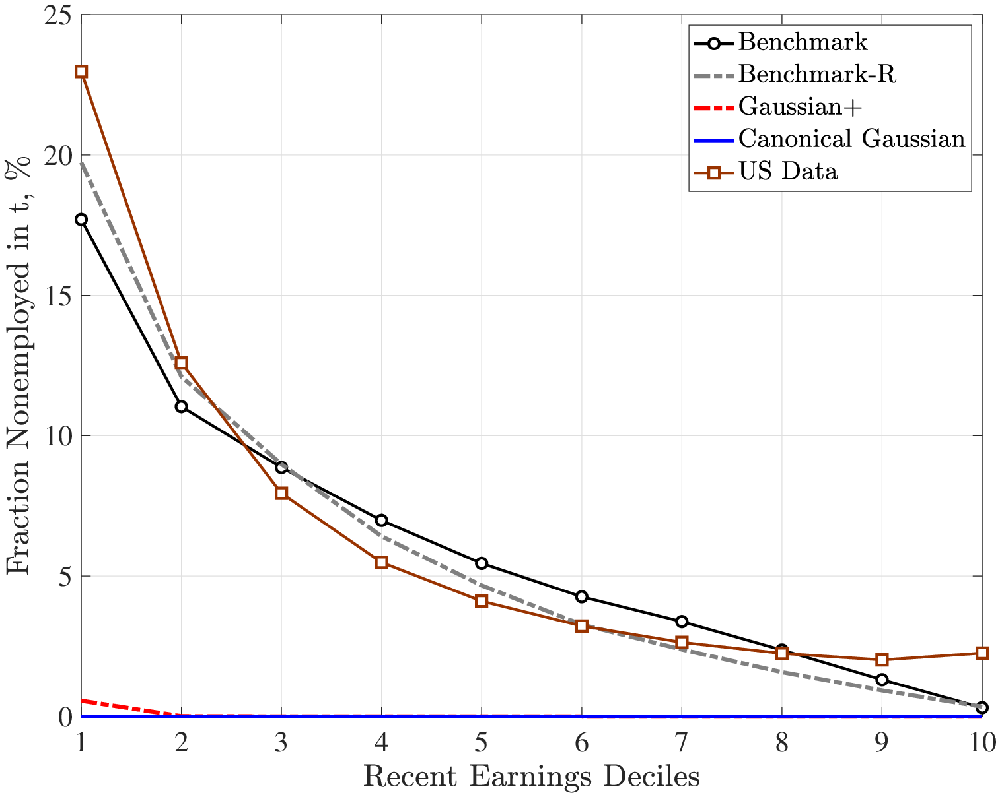
Figure: Figure 1 – Full-Year Nonemployment in \(t\) by \(\bar{Y}_{t-1}\)
Notes: This figure shows the nonemployment risk between \(t\) and \(t+1\) conditional on recent earnings computed as the average earnings between \(t-1\) and \(t-5.\) Our sample includes individuals who have income above the minimum threshold \(\bar{Y_{t}}\) in t − 1 and in at least two more years between t − 5 and t − 2.
3.4 Implications for Lifetime Earnings Inequality
We next ask how much lifetime earnings inequality is generated by each earnings process. This is of interest for two reasons. First, lifetime earnings inequality is intimately related to consumption inequality we study in the next section, so getting a sense about the former helps us anticipate some of the upcoming results. Second, it is not common to target lifetime earnings inequality as a moment when earnings processes are estimated in the literature, and this is also true for the four processes used in this paper. So, as a validation step, it is useful to check the extent to which each earnings process generates a plausible level of lifetime inequality compared to what we see in the data.
Table IV reports various measures of dispersion for lifetime earnings. The statistics for the US data in the first column are taken from Guvenen et al. (2022a), who calculate lifetime earnings as the sum of annual earnings between ages 25 and 55 without discounting. They report the statistics for the sample of individuals who make at least $50,000 in lifetime earnings in 2012 dollars (therefore including individuals with zero earnings in some years). The canonical Gaussian process severely understates lifetime inequality for all measures considered. For example, the standard deviation of log lifetime earnings is 0.4 compared with 1.3 in the data, the 90th- to 10th-percentile ratio (P90-P10) is only 2.8 compared with 14.9 in the data. The gap is even larger at the top, with a P99-P10 ratio that is an order of magnitude smaller than in the data (4.3 vs. 43.8).
| Inequality measure: | US Data | Canonical Gaussian | Benchmark |
| Std dev of log | 1.32 | 0.40 | 1.08 |
| P90/P10 | 14.88 | 2.77 | 16.12 |
| P90/P50 | 2.46 | 1.68 | 3.56 |
| P50/P10 | 6.05 | 1.67 | 4.53 |
| P99/P10 | 43.82 | 4.31 | 40.85 |
Notes: The statistics for the US data in the first column are taken from the online appendix F of Guvenen et al. (2022a), who compute them from the US Social Security Administration’s Master Earnings File of individual earnings histories for the US population between 1978 and 2013. For comparability, we compute lifetime earnings in the model the same way as done in that paper, by summing annual earnings between ages 25 and 55 without discounting for the sample of individuals who earn at least $50,000 in labor income between those ages.
In contrast, the benchmark process generates a much more plausible distribution of lifetime earnings, with the standard deviation of log measure slightly lower than in the data and the P90-P10 ratio close to its empirical counterpart (16.1 vs. 14.9). The benchmark process also does well at the very top, generating a P99-P10 ratio of 40.9 compared with 43.8 in the data. The only notable discrepancy from the data is that the benchmark process somewhat overstates the inequality above the median (P90-P50 ratio of 3.6 vs 2.5 in the data) and understates the inequality below the median (P50-P10 ratio of 4.5 vs 6.1 in the data). Overall, however, the benchmark process is much more closely aligned with the distribution of lifetime earnings seen in the US data compared with the canonical Gaussian process, which understates lifetime inequality up to an order of magnitude.
| Decomposing Lifetime Inequality Generated by the Benchmark Process | ||||||
| Benchmark | No fixed initial | No initial | No nonemp. | No persist. | No transit. | |
| heterogeneity | heterogeneity | shocks | shocks | shocks | ||
| \(\sigma _{\alpha},\sigma _{\theta}\equiv 0\) | \(\sigma _{\alpha},\sigma _{\theta},\sigma _{z_{0}}\equiv 0\) | \(\nu _{t}\equiv 0\) | \(z_{t}\equiv 0\) | \(\varepsilon _{t}\equiv 0\) | ||
| Std dev log | 1.07 | 0.91 | 0.82 | 0.90 | 0.81 | 1.07 |
| ln(90/10) | 16.12 | 9.97 | 7.77 | 10.38 | 8.17 | 16.12 |
| ln(90/50) | 3.56 | 2.44 | 2.16 | 3.25 | 2.64 | 3.56 |
| ln(50/10) | 4.53 | 4.14 | 3.60 | 3.19 | 3.10 | 4.53 |
| ln(99/10) | 40.85 | 19.30 | 14.30 | 26.31 | 12.81 | 40.85 |
A natural question to ask is how much each component of the benchmark process contributes to lifetime inequality. Table V provides the answer: Each column (after the first) shuts down one component of the benchmark process at a time and reports the resulting lifetime inequality. There are several takeaways. First, with the exception of transitory shocks (last column), all components contribute nontrivially to lifetime inequality. Second, initial conditions and persistent shocks have the largest impact on overall lifetime inequality (first two rows) and top-end inequality (last row). For example, shutting down the former (\((\sigma _{\alpha},\sigma _{\theta},\sigma _{z_{0}})\equiv 0\)) lowers the P90-P10 ratio from 16.1 to 7.8, and shutting down the latter (\(z_{t}\equiv 0\)) lowers it to 8.2. Similarly, shutting down these components reduces the P99-P10 ratio to 14.3 and 12.8, respectively, from 40.9 in the full process. Third, nonemployment shocks also have a significant effect on overall inequality (reducing P90-P10 ratio from 16.1 to 10.38), and most of this effect comes from lowering inequality below the median, with the P50-P10 ratio falling from 4.5 to 3.2 while inequality above the median remains less affected (falling slightly from 3.6 to 3.3). The bottom line is that all three main components of the benchmark process matter for lifetime earnings inequality. In the next section, we will revisit this question from a slightly different angle and ask how much each contributes to the welfare costs of idiosyncratic earnings risk.
3.5 Implications for Lifecycle Profiles
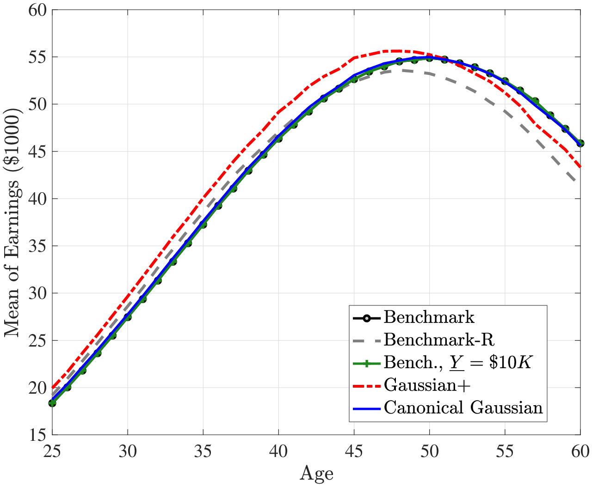
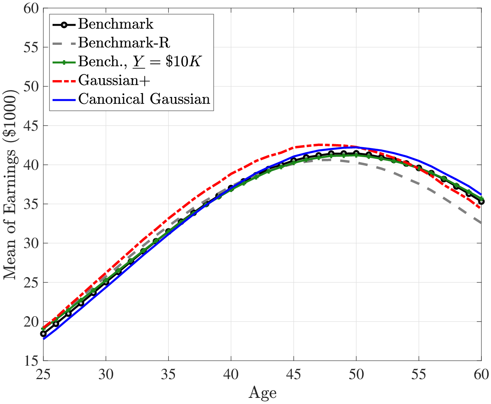
Figures 2 and 3 plot the average lifecycle profiles of before-tax and after-tax income, both in levels (former) and in logs (latter). Notice that the average lifecycle profiles of both before- and after-tax earnings are quite similar across earnings processes. This is because we normalize the parameters of the deterministic lifecycle profile across earnings processes so as to generate the same average earnings (levels) profile from age 25 to 55 (Figure 2). However, the mean and variance profiles of log after-tax, after-transfer earnings look quite different across earnings processes (Figure 3) because of a Jensen inequality effect. Namely, each process generates different variance profiles of earnings over the life cycle (e.g., benchmark and Gaussian+ generate a steeper increase in within-cohort inequality than the canonical Gaussian). Conditional on having the same (levels of) average earnings profiles, those that generate a higher dispersion mechanically imply a lower log earnings over the life cycle in Figure 3. So, for example, the benchmark process has the lowest log earnings profile in Figure 3 but displays the same level as the canonical Gaussian in Figure 2.
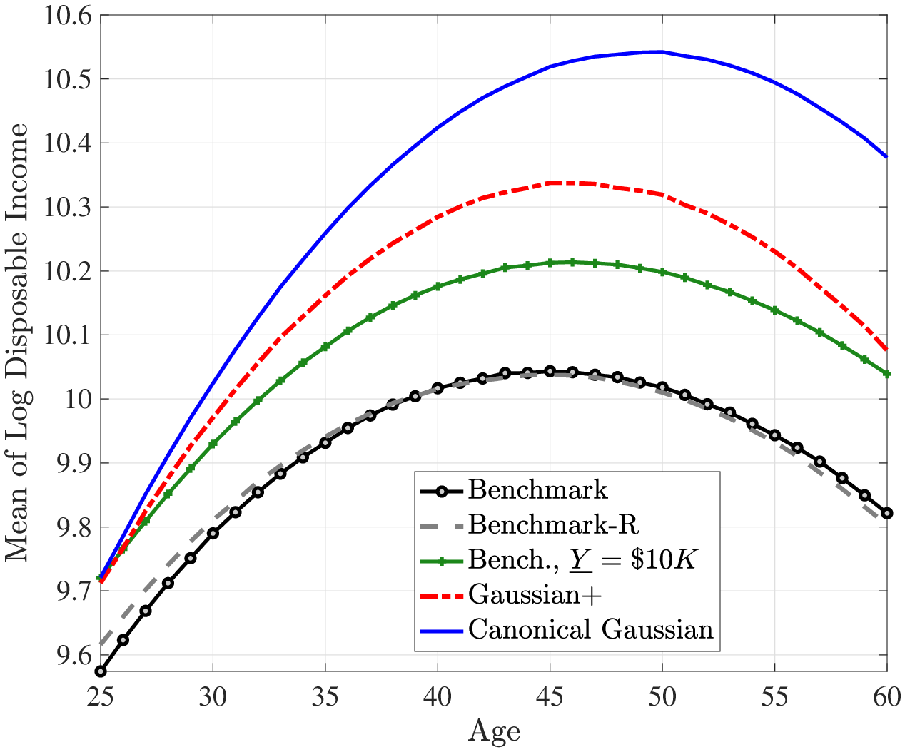
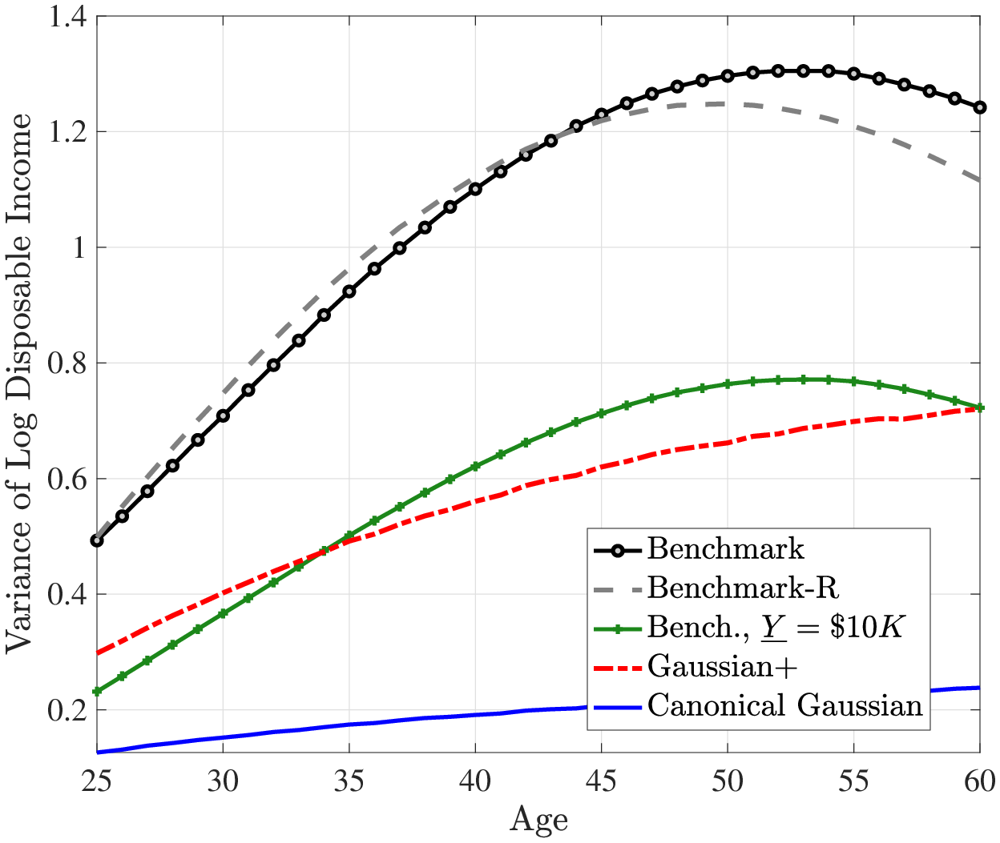
4 Welfare Costs of Idiosyncratic Earnings Risk
In this section, we quantify the welfare costs of non-Gaussian idiosyncratic income risk and compare them to their Gaussian counterpart. Specifically, we ask: What fraction of consumption at every date and state would an individual in the benchmark model be willing to give up to live in a hypothetical world with no income uncertainty? This hypothetical world is defined as one with the income process set to its average value at each age. We conduct two versions of this experiment. In the first and main exercise, we calculate the welfare effects for an individual with the average type, \(\alpha ^{i}\equiv 0\) (and \(\theta ^{i}\equiv 0\) when applicable), which abstracts from the uncertainty inherent in drawing different values of the fixed type and simply focuses on the uncertainty coming from the stochastic evolution of earnings over the life cycle. We believe that this calculation better captures what we have in mind by the welfare costs of idiosyncratic earnings risk.
The second exercise is conducted behind the veil of ignorance, that is, before the individual learns his type \(\Upsilon ^{k}\), so it combines the risk of idiosyncratic fluctuations with that of drawing an undesirable type (low \(\alpha ^{i}\)). Because this is a well-understood experiment, we relegate the equations to Appendix A, “Details of Consumption Model.” In most of our discussions, we will focus on the first measure of welfare and refer to the latter only when relevant. We also compare the welfare costs of idiosyncratic risk across different income processes. Each time, we recalibrate the model (the parameters shown in Table VI) to match the wealth-to-income ratio, the distribution of bequests, and the average taxes paid in the economy.
| Canonical Gaussian | Gaussian+ | Benchmark-R | Benchmark | |
| (1) | (2) | (3) | (4) | |
| Parameters | ||||
| \(\beta\) | 0.985 | 0.975 | 0.963 | 0.960 |
| \(\lambda\) | 1.65 | 1.73 | 1.74 | 1.763 |
| \(\phi _{1}\) | 0.648 | 0.031 | 1.138 | 1.473 |
| \(\phi _{2}\) | 9.11 | 8.56 | 6.74 | 5.95 |
| Welfare cost | ||||
| Fluctuations | 8.48% | 16.79% | 36.81% | 33.21% |
| Fluct. + Type | 9.20% | 24.03% | 42.02% | 41.51% |
Note: The next to last row (“Fluctuations”) reports the risk from idiosyncratic fluctuations for an individual with the average type: \(\alpha ^{i}=0\) (and \(\theta ^{i}=0\) for the benchmark process). The last row reports the total risk as viewed from behind the veil of ignorance—i.e., it includes the additional risk from the uncertainty of drawing \(\alpha ^{i}\) (and \(\theta ^{i}\) for benchmark). The parameter \(\tau\) is not included in the table because we keep it fixed at 0.185 in all calibrations.
In the benchmark model (Table VI, column 4), the individual is willing to give up about 33% of consumption at every date and state, which indicates very large welfare costs of idiosyncratic income fluctuations. The first column reports the corresponding number for the canonical Gaussian model, which is 8.5%, or a quarter of the welfare cost for the benchmark model. Column 2 shows that the Gaussian+ process generates about twice the welfare cost compared with the canonical model (16.8% vs 8.5%), which is not very surprising considering that the standard deviation of its persistent shocks are almost twice as high as the canonical model (standard deviation of 0.19 vs 0.11—see Table III).20
Recall that the benchmark process includes a HIP component in addition to higher-order risk. To isolate from the effects of the former and focus on the more novel latter component, we present in Table VI column (3) the welfare cost of the benchmark-R process (\(\theta ^{i}\equiv 0\)), which is even somewhat higher than the benchmark process at 36.8% The reason for the higher welfare cost can be seen from the parameter estimates in Table III. Without the flexibility of the HIP component, the Benchmark-R process estimates a persistence parameter close to a unit root (\(\rho =0.991\)) significantly higher than in the Benchmark case (\(\rho =0.959\)), which is harder to self-insure.21 That said, both welfare figures are substantial and not materially different from each other, showing that the large welfare costs are not sensitive to whether or not a HIP process is included. (We investigate the welfare costs of idiosyncratic risk from other widely used income processes in the literature in Table C.2.)
The bottom row of Table VI shows the welfare costs including the type risk (\(\alpha ^{i}\) and when relevant \(\theta ^{i}\)), which increases the welfare costs across the board but does not change the substantive conclusions. For example, for the benchmark model the welfare cost behind the veil of ignorance is 41.5% compared to the 33.2% for an individual with the average type \((\alpha ^{i}\equiv 0,\theta ^{i}\equiv 0\)). However, the average welfare costs reported in the bottom row mask significant heterogeneity across ex ante types (not reported in the table). For example, ranking all individual types \(k\) by the welfare cost they face in the benchmark model, we find that the 90th percentile of this distribution is close to 46.5%, whereas the 10th percentile is 18.5%. The highest welfare costs are associated with types who have high values of \((\alpha ^{i},\theta ^{i}).\) That is, high-income individuals suffer more from idiosyncratic risk. Although this may seem surprising at first blush, there is a simple reason for this: these individuals are less protected by the social safety net, the magnitude of which is too small to make a difference in their income fluctuations.
Decomposing the Welfare Costs
As we did in the previous section, we seek again to decompose the contribution of each component of the benchmark process to the welfare costs we found. For this purpose, we shut down each component of the model one at a time and calculate the welfare cost again, reported in Table VII. In column (2) we shut down nonemployment shocks by setting \(\nu _{t}\equiv 0\), which has a substantial effect on the welfare cost, reducing it from 33.2% to 22.3%. Recall that nonemployment shocks have an induced persistence through their dependence on \(z\). To quantify the role of this persistence, we eliminate the dependence of the probability function, \(p_{\nu}\), on \(z_{t}\), allowing it to vary only by age. This change has two effects: one, because \(z_{t}\) is very persistent, eliminating the dependence on them makes nonemployment shocks completely transitory; and two, nonemployment ceases to vary with the income level and hits all workers of a given age with the same probability of the worker with \(z_{t}=0\). Interestingly, the welfare costs in this case are quite close to the case if we were to eliminate nonemployment shocks completely, suggesting that most of the welfare costs of nonemployment shocks are due to their persistence and concentration among already low-income individuals.
In Column (3), we shut down persistent shocks so that they do not directly affect income. Yet, as noted earlier, they still govern the probability of nonemployment shocks in the background. This has an even larger effect compared to eliminating nonemployment shocks (in Column (2)), reducing the welfare cost to 11.4%—almost a third of its benchmark value. Finally, column 4 shows that shutting down the transitory shock also has a trivial effect on the welfare costs—reducing it to 32.7% from 32.9%.
| Benchmark | \(\nu _{t}\equiv 0\) | \(z_{t}\equiv 0\) | \(\varepsilon _{t}\equiv 0\) | No Tax | \(0.5\times \underline{Y}\) | \(\underline{Y}=\$10K\) | |
| (1) | (2) | (3) | (4) | (5) | (6) | (7) | |
| Welfare costs | |||||||
| Fluctuations | 33.21% | 22.25% | 11.44% | 32.68% | 46.86% | 42.24% | 20.17% |
| Fluct. + Type | 41.51% | 33.64% | 23.17% | 41.34% | 56.83% | 49.93% | 29.67% |
Notes: The first row (“Fluctuations”) reports the welfare cost of risk from idiosyncratic fluctuations for an individual with the average type, i.e., \(\alpha ^{i}\equiv 0\) (and \(\theta ^{i}\equiv 0\) for the benchmark process). The second row (“Fluct. + Type”) reports the welfare cost of “total risk” as viewed from behind the veil of ignorance, by including the risk from \(\alpha ^{i}\) draw (and \(\theta ^{i}\) for benchmark).
In the next three columns, we examine the effects of two sources of insurance embedded in the model on mitigating the effects of idiosyncratic shocks. First, in column (5), we eliminate the tax system (setting \(\tau =0\) and \(\lambda =1\)). This raises the welfare cost to 46.9%, highlighting the important role played by progressive taxation in smoothing idiosyncratic risk. Next, in column (6), we reduce the guaranteed minimum income level by half (from 6.75% of average earnings to 3.375%), and in column (7), we increase it to $10,000 (22% of average earnings). The welfare costs change from 32.9% to 42.2% and 20.2% when income floor is reduced and increased, respectively. Interestingly, the welfare cost rises only by a little in the Gaussian model when the income floor is reduced by half. The reason for this asymmetry is that in the benchmark model, individuals occasionally receive very large negative shocks (including full-year nonemployment shocks) and therefore benefit from the insurance provided by the income floor, which is less of a case in the Gaussian model, where tail shocks are much less likely. Therefore, weakening the safety net is more costly when the true income process is as in the benchmark model.
Robustness Analysis
To investigate the sensitivity of these results, we consider several alternative assumptions in Table C.3. In row (1), we replace the baseline borrowing constraint with a limit that is a constant 20% of average earnings over the life cycle. In row (2), we keep our baseline borrowing constraint but make is 50% tighter. Making the borrowing limit tighter for workers increases the welfare costs by a modest amount, from 32.9% to 34.9%. We also find similar very small effects of a tighter borrowing limit on welfare costs for the canonical Gaussian process. Thus, we conclude that our results are robust to the generosity of the borrowing limit. In row (3), we remove the warm-glow bequest motive and recalibrate the model, which turns out to have a minimal effect on welfare costs as well.
In row (4) of Table C.3, we raise relative risk aversion to \(\sigma =5\) for the canonical Gaussian and the benchmark income processes, respectively. Not surprisingly, a higher risk aversion implies a significantly higher welfare costs for both processes. Interestingly, the increase is larger for the canonical Gaussian process, for which it more than doubles from 8.5% in column (1) of Table VI to 19.7% here. The rise is also significant but smaller in percentage terms for the benchmark process, going from 33.2% in the benchmark model to 44.9%.22 This result confirms our intuition we revealed using equation 2. In particular, the higher the risk aversion, the larger the risk premium against the non-Gaussian risk compared to the Gaussian risk.
4.1 Heterogeneity in Welfare Costs of Idiosyncratic Risk
The average welfare costs reported in Table VI mask significant heterogeneity across different types of households. Next, we discuss the between-group heterogeneity in the welfare costs of idiosyncratic risk. Specifically, we investigate how different age and income groups are affected by income risk. For this purpose, we calculate the fraction of lifetime consumption each group would be willing to give up to avoid income risk and instead receive a constant stream of income equal to the group’s average earnings at all ages. Furthermore, to focus on the role of idiosyncratic risk individuals face going forward, we assume that each individual starts with a level of assets equal to the average asset holdings of their respective group. We also compare the benchmark process with the canonical Gaussian process. Table 8 summarizes our results.
| Welfare Cost with Average Assets For Each Group | ||||||
| <=P25 | P45–P55 | P70–P80 | P90–P95 | P95–P100 | ||
| Age | Canonical Gaussian Process | |||||
| 25 | 6.23% | 6.30% | 6.32% | 6.36% | 6.56% | |
| 35 | 5.60% | 5.02% | 4.98% | 4.91% | 5.34% | |
| 45 | 3.61% | 2.77% | 2.78% | 2.52% | 2.86% | |
| 55 | 1.18% | 0.70% | 0.71% | 0.64% | 0.71% | |
| Age | Benchmark Process | |||||
| 25 | 25.13% | 24.63% | 26.46% | 26.45% | 27.61% | |
| 35 | 26.15% | 16.58% | 18.76% | 18.39% | 19.81% | |
| 45 | 18.27% | 7.25% | 9.04% | 8.72% | 11.41% | |
| 55 | 6.01% | 1.50% | 1.85% | 1.48% | 3.13% | |
Notes: This table shows the fraction of lifetime consumption households in each cell would be willing to give up to avoid income risk and instead receive a constant stream of income equal to the group’s average earnings at all ages going forward.
First, the welfare costs systematically decrease by age for all income groups in both specifications. This is not surprising given that the ratio of risky human wealth relative to financial wealth—the safe asset in our model—declines by age (Huggett and Kaplan (2016)). Furthermore, labor earnings become less risky as individuals approach retirement, after which they receive a steady pension income. The specific functional form we use for the borrowing limit (equation 14), which is estimated from data by Guvenen and Smith (2014), also allows for a more generous borrowing limit for middle-age workers.
Next, looking at heterogeneity by income-group, we first observe that for the youngest workers there is relatively little variation in welfare costs of income risk over the income distribution, and relative differences grow over the working life. For example, at age 25 the welfare costs of the benchmark process vary only very little, from 26.5% to 27.6%, across the income distribution. In contrast, among 55-year-olds, the bottom income quartile workers are willing to give up, as a fraction of their lifetime consumption, more than three times as much (6.01%) as those in the upper-middle income group (1.85%). We also find that there is relatively little variation in welfare costs of the canonical Gaussian process among the youngest workers.
Second, and interestingly, welfare costs are not monotone over the income distribution but broadly exhibit a U-shaped pattern. For example, among 45-year-olds, the welfare cost of the benchmark process declines from 18.3% for the bottom quartile workers to 7.25% for those around the median, and then it increases to 11.4% for the workers in the top 5% of the earnings distribution. This pattern can be explained by a combination of different factors. On the one hand, lower-income workers face larger idiosyncratic risk because of their higher nonemployment risk (see Figure 1), and they have less assets to insure themselves. On the other hand, they are also more protected by the social safety net, the magnitude of which is too small to make a difference in income fluctuations of high-income workers. As a result of these opposing forces, the highest welfare costs are associated with those who have the highest and, especially, lowest incomes. As for the canonical Gaussian, the increase in welfare cost is less pronounced in the high end of the income distribution.
5 Consumption Dynamics, Insurance, and MPC
In this section, we study three questions that can be included under the broad umbrella of the response of consumption to earnings changes under a non-Gaussian process. In particular, we ask: (i) How accurate is the standard approach to measuring partial insurance when shocks are non-Gaussian? (ii) How effective is self-insurance in Bewley-Aiyagari models in response to non-Gaussian risk? and (iii) How does the marginal propensity to consume (MPC) with respect to transitory (e.g., a one-time stimulus check) and persistent earnings shocks differ under different earnings processes? We study the first two questions in the following subsection.
5.1 Measuring the Insurability of Income Shocks
The transmission rate of earnings shocks to consumption has received significant attention in the literature, because it is used to measure the extent of partial insurance—that is, insurance above and beyond self-insurance (see, e.g., Blundell et al. (2008), Primiceri and van Rens (2009), and Kaplan and Violante (2010)). In an important paper, Blundell et al. (2008) (hereafter BPP) proposed using two simple moment conditions to estimate the insurance coefficients in response to permanent shocks (\(\eta\)) and transitory shocks (\(\varepsilon\)), respectively. The formulas for the BPP insurance coefficients are:
\[ \phi ^{\eta}=1-\frac{\text{cov}(\Delta c_{t}^{i},y_{t+1}^{\text{disp,}i}-y_{t-2}^{\text{disp,}i})}{\text{cov}(\Delta y_{t}^{\text{disp,}i},y_{t+1}^{\text{disp,}i}-y_{t-2}^{\text{disp,}i})} \]
for permanent shocks and
\[ \phi ^{\varepsilon}=1-\frac{\text{cov}(\Delta c_{t}^{i},\Delta y_{t+1}^{\text{disp,}i})}{\text{cov}(\Delta y_{t}^{\text{disp,}i},\Delta y_{t+1}^{\text{disp,}i})} \]
for transitory shocks. The insurance coefficients range from 0 to 1, where 0 means no partial insurance above self-insurance (or full transmission) and 1 means perfect consumption insurance (no transmission). Here, we consider the following experiment. Suppose we give a panel dataset of income and consumption simulated from the benchmark model to an econometrician and ask her to estimate the insurance coefficients using BPP’s moments. What would the econometrician conclude about the extent of the insurability of income shocks?
| BPP Insurance Coefficients | ||||||
| Model: | Canonical Gaussian | Benchmark | ||||
| Age: | 30 | 40 | 50 | 30 | 40 | 50 |
| Permanent | 0.34 | 0.32 | 0.56 | 0.50 | 0.62 | 0.72 |
| Transitory | 0.95 | 0.95 | 0.95 | 0.90 | 0.89 | 0.90 |
| True Insurance Coefficients for Persistent Shocks | ||||||
| Model: | Canonical Gaussian | Benchmark | ||||
| Age: | 30 | 40 | 50 | 30 | 40 | 50 |
| Positive (\(+\)) | 0.46 | 0.48 | 0.60 | 0.44 | 0.47 | 0.57 |
| Negative \((-)\) | 0.47 | 0.50 | 0.62 | 0.54 | 0.60 | 0.71 |
Notes: The top panel reports the BPP partial insurance coefficients estimated using the standard moment conditions for permanent and transitory shocks following Blundell et al. (2008). The bottom panel reports what we call the “true” partial insurance coefficients in the model with respect to persistent shocks using the true-insurance formula reported below. A coefficient of 1 (alternatively, 0) indicates no (full) consumption insurance.
The top panel of Table 9 reports the results at different ages. When the true data-generating process is the benchmark model, the BPP procedure estimates that 62% of permanent shocks are insured and the remaining 38% is transmitted to consumption at age 40. The corresponding insurance coefficient for the Gaussian process is much lower—almost half—at 32% (so 68% transmitted). Taken at face value, these findings would indicate that persistent income shocks in the benchmark model are more insurable relative to those in the Gaussian model, which seems surprising given that both the long tails and the negative skewness of the benchmark process would be expected to be harder (at least, not easier) to insure such shocks. To understand this result, note that the standard BPP moment conditions are derived under the assumption that the earnings process is given by the persistent-plus-transitory process such as the canonical Gaussian model, but unlike the benchmark process. The discrepancy could happen if the benchmark process features less persistent shocks (which is partly true, at least judging crudely based on the value of \(\rho\)—0.98 vs. 0.959—and the presence of the more transitory non-employment shock process) or if the benchmark lifecycle model features more insurance opportunities relative to the Gaussian model (which is not true—they both have self-insurance plus an income floor only).
To avoid these problems, a more direct measure of the partial insurance coefficient with respect to persistent shocks can be obtained from simulated data by directly looking at the covariation between consumption growth and the innovation, \(\eta _{t}\), to the persistent component, \(z_{t}.\) Using this covariation, we can also go one step further and measure what we call the “true” partial insurance coefficient with respect to positive and negative innovations separately using this equation:
\[ \chi _{\text{insur.}}^{\eta}=1-\frac{\text{cov}(\Delta c_{t}^{i},\eta _{t}\mid \eta _{t}>0)}{\text{var}(\eta _{t}\mid \eta _{t}>0)}. \]
The bottom panel of Table 9 reports the true coefficients for both processes, which reveal two results. First, under the Gaussian process, the insurance against positive and negative persistent shocks are similar, whereas under the benchmark process, negative shocks are better insured than positive shocks. Second, the insurability of positive persistent shocks are very similar between the two processes, whereas negative shocks are slightly more insurable under the benchmark process. This asymmetry is because the typical negative shock in the benchmark process is drawn from a thicker tail (due to both the negative skewness and excess kurtosis) and therefore reduces the earnings to a level at which the guaranteed minimum income threshold kicks in to smooth those shocks.
To complement this analysis, we consider another way to quantify the degree of partial insurance commonly used in the literature— by studying how within-cohort consumption inequality evolves over the life cycle. The idea is that if shocks are easily insurable (because either they are not persistent or the economy features rich smoothing opportunities) then consumption inequality should not rise much with age. To investigate this, Figure 4 plots the cross-sectional variance of log consumption in the benchmark and Gaussian models. In the former, consumption inequality rises by about 45 log points from age 25 to age 60, which is about four times as large as the rise in the Gaussian model (about 12 log points). Therefore, this second way of looking at the degree of partial insurance leads to the opposite conclusion: shocks in the benchmark model are less insurable, which causes consumption inequality to rise more than in the Gaussian model. This latter evidence is also more consistent with the higher welfare costs of idiosyncratic shocks that we found for the benchmark model relative to the Gaussian model above. That said, this result depends somewhat on the availability of public insurance. In the presence of a more generous income floor (i.e., \(\underline{Y}=\$10,000\)), consumption inequality rises by around 30 log points in the benchmark model, which is still much higher than in the canonical Gaussian model.
Recall that the benchmark process generates a steeper increase in within-cohort, after-tax, after-transfer income inequality than the canonical Gaussian specification even with a \(\$10,000\) income floor (see Figure 3). The total effect of earnings shocks on consumption responses also depends on the size of shocks, which depends on the shape of the distribution it is drawn from. The benchmark process with its long tails and left skewness can produce shocks that generate a larger income inequality and stronger total consumption response.
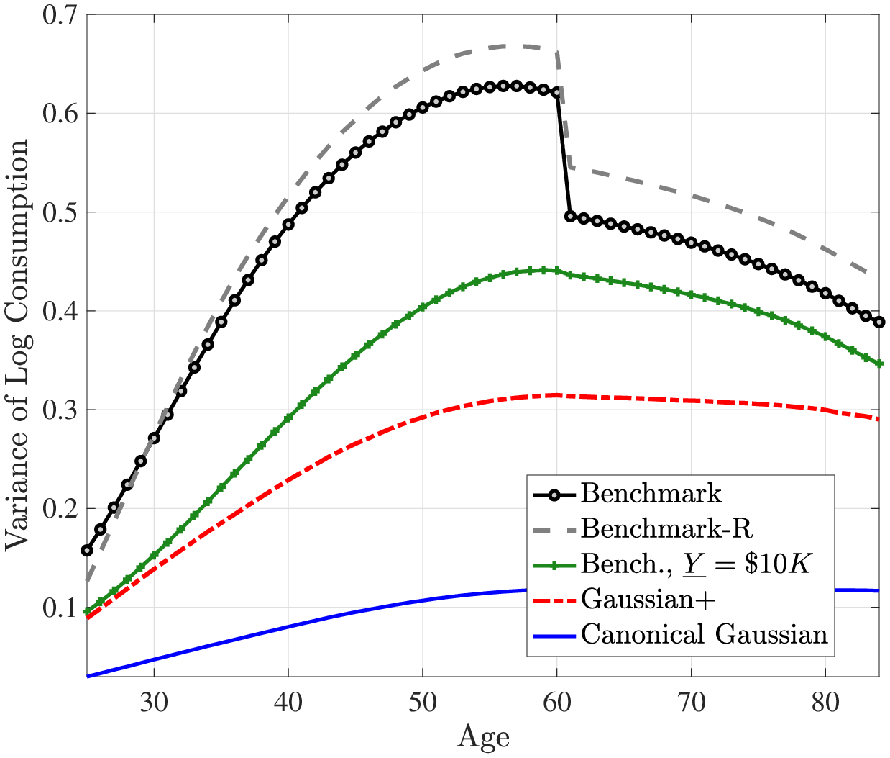
Figure: Figure 4 – Within-Cohort Variance of Log Consumption Over the Life Cycle
Notes: The green line with “+” markers is simulated using the benchmark income process but by raising the minimum income floor to $10,000.
Taken together, we conclude from these two pieces of evidence that once we move beyond Gaussian shocks and linear models, extra care is needed to properly measure the extent of insurability of shocks. Nonlinear dynamics and higher-order moments generate interesting new patterns. For example, why does the transmission parameters indicate a low rate of transmission in the benchmark model? An important reason is that the partial insurance coefficient measures the average response of consumption growth to income shocks. But it is plausible to expect that the consumption response varies by the sign of the shock, by its size (Beraja and Zorzi, 2024), and by many of its other properties established in the previous sections. So, the average response coefficient could provide an incomplete picture of the transmission of income shocks to consumption.
A natural question that this discussion raises concerns the properties of the entire distribution of consumption growth rates implied by a model, including its higher-order moments. We turn to this point next.
Higher-Order Moments of Consumption Growth
Table 10 reports the standard deviation, skewness and kurtosis of consumption growth in the US data (from the PSID), the Gaussian model, and both versions of the benchmark model. For the empirical distribution, we use a total household consumption measure for the sample described in Subsection 3.2; see Appendix B for details.
There are several takeaways from Table (10). First, the standard deviation of consumption growth is twice as high in the benchmark model than for the Gaussian specification, partly reflecting the larger magnitude of shocks in the former. Second, consumption growth is about three times more volatile in the PSID compared with the benchmark process. Although this may suggest that, despite the large welfare costs we found above, consumption smoothing may still be a bit too effective in the model relative to the data, it may also very well be a reflection of the high measurement error found in survey data. The discrepancy may also reflect other shocks not captured in our model (such as marriage, divorce, children, moving, health, and so on).
Third, consumption growth is negatively skewed in the benchmark model, and much more so in the Benchmark-R model, but has slightly positive skewness in the Gaussian model. The minimum income floor induces slight positive skewness in both models—without it, the benchmark model delivers even more negatively skewed consumption growth. Interestingly, consumption growth becomes less negatively skewed with age, even though income shocks become more negatively skewed, a divergence that seems to be because precautionary wealth allows better smoothing at older ages. Skewness is only slightly negative in the PSID, but measurement error may bias it toward zero to the extent that it is symmetric. Indeed, Constantinides and Ghosh (2017) show that household consumption growth is more robustly negatively skewed in the Consumer Expenditure Survey (CE) data, which may suffer less from measurement error (at least over shorter horizons) due to its design that is squarely focused on consumption expenditures.
Finally, consumption growth in the benchmark model has high excess kurtosis, as measured by the Crow-Siddiqui measure. The Gaussian model delivers almost no excess kurtosis in consumption growth, with a Crow measure of 2.95–2.97 compared with 2.91 for a standard Gaussian distribution. The empirical distribution of consumption growth does have excess kurtosis, ranging between 3.57 and 3.69; however, this is significantly lower than what is implied by both versions of the non-Gaussian benchmark model.23
| US Data (PSID) | Canonical Gaussian | Benchmark-R | Benchmark | |||||||||
| Age | 30 | 40 | 50 | 30 | 40 | 50 | 30 | 40 | 50 | 30 | 40 | 50 |
| Coefficient on: | ||||||||||||
| Standard deviation | 0.46 | 0.41 | 0.40 | 0.06 | 0.06 | 0.05 | 0.14 | 0.12 | 0.09 | 0.13 | 0.13 | 0.11 |
| Kelley skewness | 0.01 | –0.07 | –0.01 | 0.01 | 0.02 | 0.02 | –0.64 | –0.65 | –0.62 | –0.19 | –0.11 | –0.10 |
| Crow-Siddiqui kurtosis | 3.69 | 3.63 | 3.57 | 2.97 | 2.95 | 2.97 | 6.00 | 5.73 | 6.65 | 6.30 | 6.82 | 7.67 |
Notes: Table 10 shows the moments of consumption changes. refers to households income after taxes and transfers. The statistics are computed from the PSID waves 2005–2021. In the data, age groups are defined including plus and minus three years.
Deviations from lognormality of the consumption growth distribution have been studied in some recent papers. In addition to Constantinides and Ghosh (2017) just noted above, Toda and Walsh (2015) use CE data to document that the household consumption growth distribution has long tails in the form of a double-Pareto distribution, consistent with excess kurtosis in the benchmark model studied here.24 In very recent work, Buda et al. (2022) make use of millions of transactions from bank records to show that indeed the full distribution of consumption growth deviates from a normal distribution differently across ages and income groups.
Overall, these results suggest that while the non-Gaussian earnings process provides a step toward better capturing the properties of the consumption growth distribution in the data, important discrepancies remain that invite further research on this topic. There are channels of adjustment missing in this paper that can also help reconcile theory and data at the tails, such as durable (lumpy) adjustments, as discussed in Beraja and Zorzi (2024).
5.2 The Marginal Propensity to Consume (MPC)
The marginal propensity to consume (MPC) out of earnings (or wealth) is a key ingredient in designing effective fiscal and monetary policies (e.g., Kaplan et al. (2018)). The substantial concentration of wealth and earnings in the United States and in many modern economies implies that the effectiveness of such policies can be significantly improved if they are targeted to certain segments of the population if MPCs vary in a meaningful way across the population.25 In this section, we investigate the implications of non-Gaussian earnings risk for the level and distribution of MPCs in the population.
MPC Response to $500 Stimulus Check
We start with a standard exercise and measure the MPC in response to a one-time $500 stimulus check, similar to the analyses conducted before (e.g., Johnson et al., 2006; Parker et al., 2013; Kaplan and Violante, 2014). Figure (5) reports the results for different earnings processes. Starting with the benchmark process, we see that the MPC distribution is declining with the cash-on-hand level of individuals and does so in a very convex fashion at low cash-on-hand levels: it falls from about 35% for the bottom 1% group to 15% at the 10th percentile and to about 7.5% at the 30th percentile. It then falls gradually to 5% for individuals in the top 1% of the cash-on-hand distribution. The benchmark-R process shows a similar pattern with a slightly lower level at the low end.
In contrast, the MPC is much lower and very flat under the Gaussian process: it ranges between 4% and 5% from the 5th percentile all the way up to the top 1 percent group (with the exception of the very bottom of the distribution). What is also interesting is that rather than declining with cash-on-hand, it bottoms out around the 40th percentile and increases slightly thereafter. The pattern is essentially the same, with a slightly higher level at the low end, for the Gaussian+ process. The figure also plots the MPCs in the benchmark model when the minimum income floor is raised to $10,000, which significantly lowers the level of the MPC and flattens its shape across the distribution. Although $10,000 seems too high relative to the empirical estimate of welfare and social safety net programs we use in our baseline calibration (taken from Guner et al. (2023)), this result still underscores the importance of the minimum income floor level used in calibration for the quantitative conclusions one reaches in models with idiosyncratic earnings risk. This is all the more true when the non-Gaussian features of earnings dynamics, such as negative skewness and long tails, are modeled.
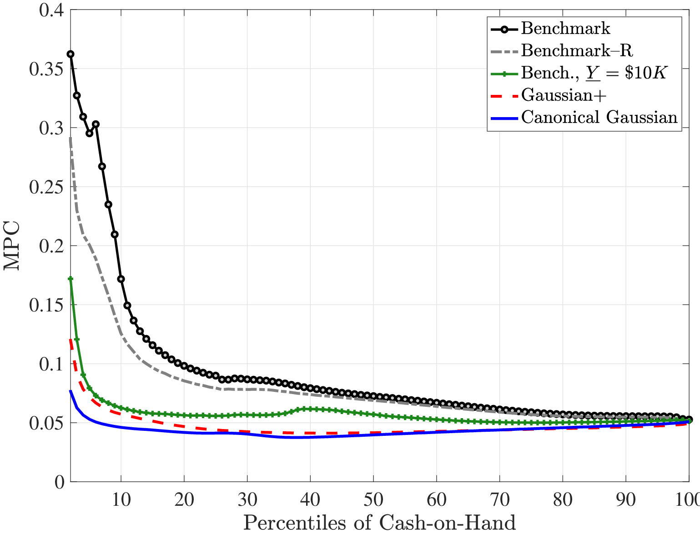
Figure: Figure 5 – MPC out of $500 Stimulus Check
Notes: The figure plots the MPCs in response to a one-time $500 stimulus check.
MPC Response to 1% Persistent or Transitory Earnings Shocks
The appeal of the stimulus check exercise is that it is informative for actual stimulus policies regularly implemented by governments. But a different type of exercise is also informative for other contexts: the MPCs in response to a fixed percentage increase in persistent or transitory earnings. The difference of course is that these increases are anchored to the earnings level of the individual rather than being a fixed dollar amount. These MPCs would be relevant, for example, for a fixed reduction or increase in the labor income tax rate that can be permanent or transitory, or for an increase or decrease in inflation, among others. Analyzing the MPC out of a persistent increase in earnings is also useful because the persistence of earnings shocks in the benchmark process is not solely captured by \(\rho\) of the AR(1) process but also through the nonemployment shocks (see Guvenen et al. (2021) for a discussion).
The left panel of Figure 6 plots the MPC out of a 1% transitory earnings shock. The overall patterns are similar to the stimulus check exercise above, with some notable differences: the MPC is higher for the benchmark process—close to 5% for the median cash-on-hand individual compared with about 3% for the Gaussian model; it declines with cash-on-hand levels, albeit at a slower (less convex) fashion than the fixed stimulus payment; the Gaussian model displays little heterogeneity across earnings levels; and raising the minimum income floor substantially reduces the MPC in the benchmark model.
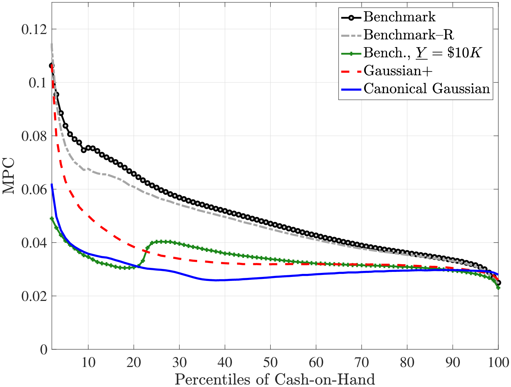
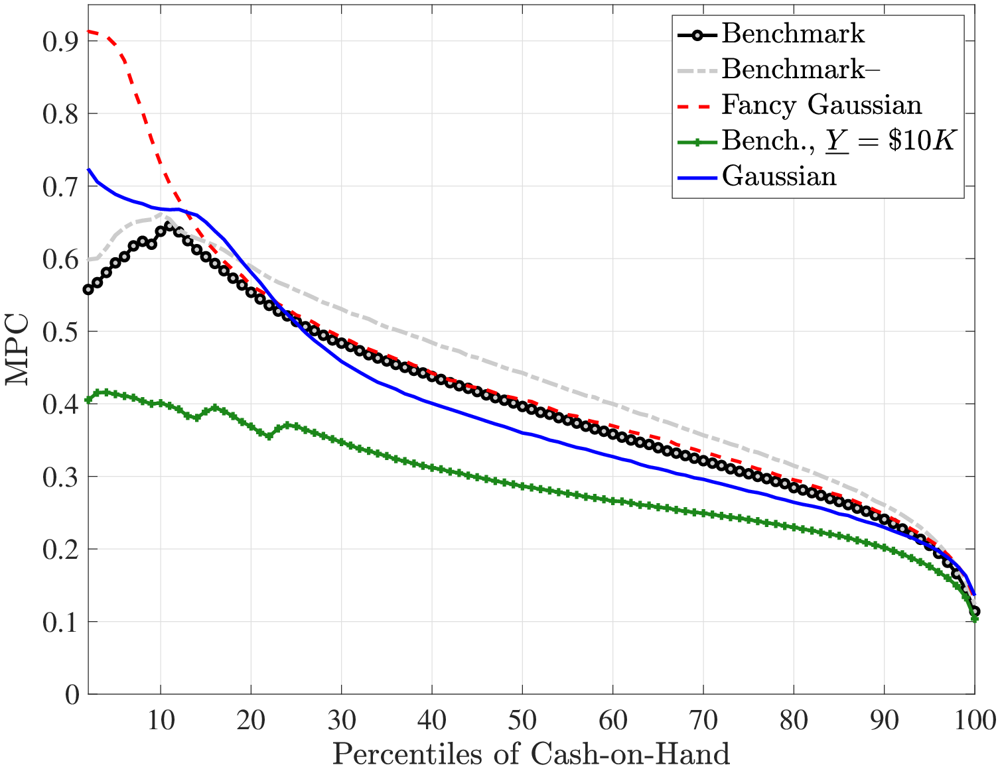
Notes: The figures plot the MPCs in response to a transitory increase in earnings (\(\varepsilon\)) (left panel) and persistent increase (right panel) that is equal to 1% of each individual’s earnings level.
There are more interesting differences and similarities in the right panel, which plots the MPCs in response to a 1% innovation to the persistent component (\(z_{t}\)). (Notice that the likelihood of the nonemployment shock depends on \(z_{t}\), so it rises in response to the reduction in \(z_{t}\), which our calculations take into account.) In this case, both the level and shape of the MPC distribution are fairly similar between the Gaussian and benchmark processes. The MPC at the median cash-on-hand level is about 40% for the benchmark model and 36% for the Gaussian process. The benchmark-R process has a higher MPC at 44% at the median, owing to the higher estimated \(\rho\) for that process. As before, increasing the minimum income floor to $10,000 reduces the MPC for the benchmark model to less than 30% at the median.
6 Conclusions
The nature of income risk has important consequences for many economic decisions and distributional phenomena that involve risk and influence the design of optimal social insurance and taxation. Recent contributions to the literature have shown significant nonlinearities and nonnormalities in income dynamics (e.g., Guvenen et al. (2021); Arellano et al. (2017b)). There is a growing literature incorporating nonlinear, non-Gaussian earnings dynamics into quantitative models. In this paper we have studied how higher-order income risk can have quite different implications for consumption dynamics, consumption insurance, and welfare compared with the commonly used Gaussian processes. The overarching finding from our analysis is that the benchmark process implies more severe income risk—e.g., larger lifetime earnings inequality and welfare costs; negatively skewed and leptokurtic consumption growth; larger MPCs out of transitory earnings shocks—than previously modeled through canonical Gaussian processes.
This finding could have implications for a wide range of economic questions where earnings inequality and earnings risk play a central role. For example, an important point of our exercise is the crucial role of public insurance mechanisms against (negative) tail risk in earnings. While an even more generous income floor does not fully insure against idiosyncratic negative changes, our analysis suggests that this channel is quantitatively important to dampen the welfare cost of higher-order earnings risk. While we capture all transfers with an income floor (and progressive taxation), different instruments can be mapped into our catch-all parameter. For example, in the context of idiosyncratic risk correlated with aggregate shocks, Busch et al. (2022) find that unemployment insurance is the public instrument that smoothes variation in higher-order earnings risk the most across different countries, more than progressive taxation, welfare, pensions, and SSI. Our result thus has implications for the design of public insurance with varying idiosyncratic income risk and the potential welfare gains of automatic stabilizers.
Our last finding is that a non-Gaussian earnings risk also implies a stronger consumption response to earnings shocks. The cross-sectional distribution of consumption growth implied by the benchmark model displays strong higher-order moments, as well as higher volatility—closer to the distribution of consumption growth from the PSID—than a Gaussian earnings process. Overall, these results suggest that the non-Gaussian earnings process provides a step toward better capturing the properties of the consumption growth distribution in the data. Yet, there are still important discrepancies: incorporating new channels of consumption adjustment, such as durable (lumpy) adjustments (Beraja and Zorzi (2024)), or advancing consumption measurement beyond and as a complement to survey data (Buda et al. (2022)) can help better reconcile the theoretical and empirical distribution of consumption growth.
References
Andreski, P., Li, G., Samancioglu, M. Z. and Schoeni, R. (2014). Estimates of annual consumption expenditures and its major components in the psid in comparison to the ce. American Economic Review, 104 (5), 132–35.
Arellano, M., Blundell, R. and Bonhomme, S. (2017a). Earnings and consumption dynamics: a nonlinear panel data framework. Econometrica, 85 (3), 693–734.
—, — and — (2017b). Earnings and consumption dynamics: a nonlinear panel data framework. Econometrica, 85 (3), 693–734.
Bell, F. C. and Miller, M. L. (2002). Life Tables for the United States Social Security Area: 1900-2100”. Actuarial Study 116, Office of the Actuary, Social Security Administration.
Benabou, R. (2000). Unequal societies: Income distribution and the social contract. American Economic Review, 90 (1), 96–129.
Beraja, M. and Zorzi, N. (2024). Durables and Size-Dependence in the Marginal Propensity to Spend. Working Paper 32080, National Bureau of Economic Research.
Blundell, R., Pistaferri, L. and Preston, I. (2008). Consumption inequality and partial insurance. American Economic Review, 98 (5), 1887–1921.
—, — and Saporta-Eksten, I. (2012). Consumption Inequality and Family Labor Supply. Working Paper Series 18445, National Bureau of Economic Research.
—, — and — (2016). Consumption inequality and family labor supply. American Economic Review, 106 (2), 387–435.
Brav, A., Constantinides, G. and Geczy, C. (2002). Asset pricing with heterogeneous consumers and limited participation: Empirical evidence. Journal of Political Economy, 110 (4), 793–824.
Buda, G., Carvalho, V., Hansen, S., Ortiz, A., Rodrigo, T. and Rodriguez Mora, J. V. (2022). National Accounts in a World of Naturally Occurring Data: A Proof of Concept for Consumption. CEPR Discussion Papers 17519, C.E.P.R. Discussion Papers.
Busch, C., Domeij, D., Guvenen, F. and Madera, R. (2022). Skewed Idiosyncratic Income Risk over the Business Cycle: Sources and Insurance. American Economic Journal: Macroeconomics, 14 (2), 207–242.
— and Ludwig, A. (2024). Higher-order income risk over the business cycle. International Economic Review, forthcoming.
Commault, J. (2022). How do persistent earnings affect the response of consumption to transitory shocks?
Constantinides, G. M. (2021). Welfare Costs of Idiosyncratic and Aggregate Consumption Shocks. Working Paper 29009, National Bureau of Economic Research.
— and Duffie, D. (1996). Asset pricing with heterogeneous consumers. The Journal of Political Economy, 104 (2), 219–240.
— and Ghosh, A. (2017). Asset pricing with countercyclical household consumption risk. The Journal of Finance, 72 (1), 415–460.
De Nardi, M., Fella, G., Knoef, M., Paz-Pardo, G. and Van Ooijen, R. (2021). Family and government insurance: Wage, earnings, and income risks in the netherlands and the u.s. Journal of Public Economics, 193, 104327.
De Nardi, M., Fella, G. and Paz-Pardo, G. (2020). Nonlinear Household Earnings Dynamics, Self-Insurance, and Welfare. Journal of the European Economic Association, 18 (2), 890–926.
De Nardi, M., Fella, G. and Paz-Pardo, G. (2020). Wage Risk and Government and Spousal Insurance. NBER Working Papers 28294, National Bureau of Economic Research, Inc.
— and Yang, F. (2016). Wealth inequality, family background, and estate taxation. Journal of Monetary Economics, 77, 130 – 145.
Friedman, M. (1957). A Theory of the Consumption Function. Princeton, NJ: Princeton University Press.
Gale, W. G. and Scholz, J. K. (1994). Intergenerational transfers and the accumulation of wealth. Journal of Economic Perspectives, 8 (4), 145–160.
Ghosh, A. and Theloudis, A. (2023). Consumption Partial Insurance in the Presence of Tail Income Risk. Papers 2306.13208, arXiv.org.
Guner, N., Kaygusuz, R. and Ventura, G. (2023). Rethinking the welfare state. Econometrica, 91 (6), 2261–2294.
—, Rauh, C. and Ventura, G. (2022). Means-Tested Transfers in the US: Facts and Parametric Estimates. Working paper, Arizona State University.
Guvenen, F. (2009). An Empirical Investigation of Labor Income Processes. Review of Economic Dynamics, 12 (1), 58–79.
—, Kaplan, G., Song, J. and Weidner, J. (2022a). Lifetime incomes in the united states over six decades. American Economic Journal: Macroeconomics, 14 (4), 446–479.
—, Karahan, F., Ozkan, S. and Song, J. (2021). What Do Data on Millions of U.S. Workers Say About Labor Income Risk? Econometrica, 89 (5), 2303–2339.
—, Pistaferri, L. and Violante, G. (2022b). Global trends in income inequality and income dynamics: New insights from grid. Quantitative Economics, 13, 1321–1360.
— and Smith, A. A. (2014). Inferring Labor Income Risk and Partial Insurance from Economic Choices. Econometrica, 82 (6), 2085–2129.
Haider, S. J. and Solon, G. (2006). “life-cycle variation in the association between current and lifetime earnings. American Economic Review, 96 (4), 1308–1320.
Halvorsen, E., Holter, H. A., Ozkan, S. and Storesletten, K. (2023). Dissecting Idiosyncratic Earnings Risk. Journal of the European Economic Association, 22 (2), 617–668.
—, Ozkan, S. and Salgado, S. (2022). Earnings dynamics and its intergenerational transmission: Evidence from norway. Quantitative Economics, 13 (4), 1707–1746.
Hayashi, F., Altonji, J. and Kotlikoff, L. (1996). Risk-sharing between and within families. Econometrica, 64 (2), 261–94.
Heathcote, J., Storesletten, K. and Violante, G. L. (2014). Consumption and labor supply with partial insurance: An analytical framework. American Economic Review, 104 (7), 2075–2126.
Hubbard, R. G., Skinner, J. and Zeldes, S. P. (1995). Precautionary saving and social insurance. The Journal of Political Economy, 103 (2), 360–399.
Huggett, M. and Kaplan, G. (2016). How large is the stock component of human capital? Review of Economic Dynamics, 22, 21–51.
Hurd, M. D. and Smith, J. P. (2002). Expected bequests and their distribution.
Johnson, D. S., Parker, J. A. and Souleles, N. S. (2006). Household expenditure and the income tax rebates of 2001. American Economic Review, 96 (5), 1589–1610.
Kaplan, G., Moll, B. and Violante, G. L. (2018). Monetary policy according to hank. American Economic Review, 108 (3), 697–743.
— and Violante, G. L. (2010). How much consumption insurance beyond self-insurance? American Economic Journal: Macroeconomics, 2 (4), 53–87.
— and — (2014). A model of the consumption response to fiscal stimulus payments. Econometrica, 82 (4), 1199–1239.
— and — (2022). The marginal propensity to consume in heterogeneous agent models. Annual Review of Economics, 14, 747–775.
Karahan, F. and Ozkan, S. (2013). On the persistence of income shocks over the life cycle: Evidence, theory, and implications. Review of Economic Dynamics, 16 (3), 452–476.
Krebs, T. (2003). Growth and Welfare Effects of Business Cycles in Economies with Idiosyncratic Human Capital Risk. Review of Economic Dynamics, 6 (4), 846–868.
Krusell, P., Mukoyama, T., Sahin, A. and Anthony A. Smith, J. (2009). Revisiting the Welfare Effects of Eliminating Business Cycles. Review of Economic Dynamics, 12 (3), 393–402.
Lucas, R. E. (1987). Models of Business Cycles. New York: Basil Blackwell.
Ozkan, S., Song, J. and Karahan, F. (2023). Anatomy of lifetime earnings inequality: Heterogeneity in job-ladder risk versus human capital. Journal of Political Economy Macroeconomics, 1 (3), 506–550.
Parker, J. A., Souleles, N. S., Johnson, D. S. and McClelland, R. (2013). Consumer spending and the economic stimulus payments of 2008. American Economic Review, 103 (6), 2530–53.
Primiceri, G. E. and van Rens, T. (2009). Heterogeneous life-cycle profiles, income risk and consumption inequality. Journal of Monetary Economics, 56 (1), 20 – 39, carnegie-Rochester Conference Series on Public Policy: The Causes and Consequences of Rising Economic Inequality April 25-26, 2008.
Pruitt, S. and Turner, N. (2020). Earnings risk in the household: Evidence from millions of us tax returns. American Economic Review: Insights, 2 (2), 237–54.
Storesletten, K., Telmer, C. I. and Yaron, A. (2001). The welfare cost of business cycles revisited: Finite lives and cyclical variation in idiosyncratic risk. European Economic Review, 45 (7), 1311–1339.
—, — and — (2004). Cyclical dynamics in idiosyncratic labor market risk. Journal of political Economy, 112 (3), 695–717.
Toda, A. A. and Walsh, K. (2015). The double power law in consumption and implications for testing euler equations,. Journal of Political Economy, 123 (5), 1177–1200.
Wang, C., Wang, N. and Yang, J. (2016). Optimal consumption and savings with stochastic income and recursive utility. Journal of Economic Theory, 165, 292–331.
Supplemental Online Appendix
NOT FOR PUBLICATION
7 Details of Consumption Model
7.1 Numerical Solution of the Model
In order to be able to fully capture the features of the rich earnings dynamics we estimated in this paper, we chose not to discretize the income process when solving the consumption model. Thus it is worth discussing our numerical solution methodology to solve an otherwise standard Bewley model. We employ value function iteration to solve for the policy function for the consumption decision and then use the policy function to simulate consumption-savings decisions of individuals. We now discuss the details below.
7.1.1 Bounds and Grids
For a given \(\left (\alpha ^{k},\theta ^{k}\right)-\) type worker, the value function has three continuous variables for each age \(t\), asset holdings \(a_{t}\), and two persistent components, \(z_{1,t},z_{2,t}\), one or both of which may be fully transitory. We start simulating the continuous income process which is used in the simulation of the consumption path of individuals. We take the minimum and maximum values of simulated persistent components to be the bounds of the \(z_{1,t}\) and \(z_{2,t}\) spaces. We choose grip points in the \(z_{1,t}\) and \(z_{2,t}\) spaces to be equally spaced.26
As for the asset space, the borrowing limit is set by equation 14. The upper bound for the asset spaced is chosen such that in simulations no individual’s asset holdings come close to this upper bound, \(A_{t}\). We choose grids in the \(a_{t}\) dimension to be polynomial spaced between \(a_{t}=\bar{A}_{k}\) and \(a_{t}=A_{t}\), with an explicit point at \(a_{t}=0\). We have 100 grid points for the asset space.
7.1.2 Integration and Interpolation
The value function of a type-k individual with \(\left (\alpha ^{k},\theta ^{k}\right)\) is given by:27
\[ V_{t}^{i,k}\left (a_{t}^{i},z_{1,t}^{i},z_{2,t}^{i}\right) =\max _{c_{t}^{i},a_{t+1}^{i}} u(c_{t}^{i})+\beta \mathbb{E}_{t}\left [V_{t+1}^{i,k}\left (a_{t+1}^{i},z_{1,t+1}^{i},z_{2,t+1}^{i}\right)\mid z_{1,t}^{i},z_{2,t}^{i}\right]. \]
We define the conditional expectation function: \[ \tilde{V}_{t+1}^{i,k}\left (a_{t+1}^{i},z_{1,t}^{i},z_{2,t}^{i}\right)=\mathbb{E}_{t}\left [V_{t+1}^{i,k}\left (a_{t+1}^{i},z_{1,t+1}^{i},z_{2,t+1}^{i}\right)\mid z_{1,t}^{i},z_{2,t}^{i}\right]. \] Then the value function becomes: \[ V_{t}^{i,k}\left (a_{t}^{i},z_{1,t}^{i},z_{2,t}^{i}\right) =\max _{c_{t}^{i},a_{t+1}^{i}} u(c_{t})+\beta \tilde{V}_{t+1}^{i,k}\left (a_{t+1}^{i},z_{1,t}^{i},z_{2,t}^{i}\right), \] which reduces the interpolation to only along the \(a_{t+1}\) dimension, for which we use one-dimensional spline interpolation.
The conditional expectation, \(\tilde{V}_{t+1}^{i,k}\left (a_{t+1}^{i},z_{1,t}^{i},z_{2,t}^{i}\right)=\mathbb{E}_{t}\left [V_{t+1}^{i,k}\left (a_{t+1}^{i},z_{1,t+1}^{i},z_{2,t+1}^{i}\right)\mid z_{1,t}^{i},z_{2,t}^{i}\right]\) involves integration over the innovations to both of the persistent components, \(\eta _{1,t}^{i}\) and \(\eta _{2,t}^{i}\) and an non-employment shock, \(\nu _{t}^{i}\). Probability of non-employment shocks is a function of \(\left (z_{1,t+1}^{i},z_{2,t+1}^{i}\right)\)given by eq. 13. Then for given \(\left (z_{1,t+1}^{i},z_{2,t+1}^{i}\right)\) we first take the expectation over \(\nu _{t}^{i}\). For this purpose, we approximate the non-employment shocks using the Gauss-Laguerre abscissas and weights which is the quadrature that is used for exponential distribution. In particular, let \(\left \{x_{\nu,t}^{1},x_{\nu,t}^{2},..x_{\nu,t}^{n_{\nu}},x_{\nu,t}^{n_{\nu}+1}=0\right \}\) and \(\left \{w_{\nu,t}^{1},w_{\nu,t}^{2},..w_{\nu,t}^{n_{\nu}},w_{j,t}^{n_{\nu}+1}=1-p_{\nu,t}\right \}\) be the the Gauss-Laguerre abscissas and weights for the \(\nu _{t}^{i}\), including the case of full employment, \(x_{\nu,t}^{n_{\nu}+1}=0\). Note that the weights depend on \(\left (z_{1,t+1}^{i},z_{2,t+1}^{i}\right)\). Then, we define the conditional expectation function over non-employment shocks as the following:
\[ \begin{aligned} \mathbb{V}_{t+1}^{i,k}\left (a_{t+1}^{i},z_{1,t+1}^{i},z_{2,t+1}^{i}\right) &= \mathbb{E}_{t,\nu}\left [V_{\nu,t+1}^{i,k}\left (\nu _{t}^{i};a_{t+1}^{i},z_{1,t+1}^{i},z_{2,t+1}^{i}\right)\mid z_{1,t+1}^{i},z_{2,t+1}^{i}\right]\\ &= \sum _{j}^{n_{\nu}+1}w_{\nu,t}^{j}V_{\nu,t+1}^{i,k}\left (x_{\nu,t}^{j};a_{t+1}^{i},z_{1,t+1}^{i},z_{2,t+1}^{i}\right). \end{aligned} \]
Innovations to the persistent components, \(\eta _{1,t}\) and \(\eta _{2,t}\) are drawn from a mixture of two normal distributions. Let \(p_{z_{1}}\) and \(p_{z_{2}}\) be probability to draw an innovation from the first normal distribution for persistent components \(z_{1}\) and \(z_{2}\), respectively. The normal distributions are approximated using the Gauss-Hermite abscissas and weights. Let \(\left \{x_{j,t}^{m,1},x_{j,t}^{m,2},..x_{j,t}^{m,n_{j}^{m}}\right \}\) and \(\left \{w_{j,t}^{m,1},w_{j,t}^{m,2},..w_{j,t}^{m,n_{j}^{m}}\right \}\) be the Gauss-Hermite abscissas and weights for the innovations from normal distribution \(m=1,2\) to the persistent component \(j=1,2\). Then, the conditional expectation function over the shocks to the persistent components is defined as: \[ \begin{aligned} \tilde{V}_{t+1}^{i,k}\left (a_{t+1}^{i},z_{1,t}^{i},z_{2,t}^{i}\right) &= \mathbb{E}_{t}\left [\mathbb{V}_{t+1}^{i,k}\left (a_{t+1}^{i},z_{1,t+1}^{i},z_{2,t+1}^{i}\right)\mid z_{1,t}^{i},z_{2,t}^{i}\right]\\ &= p_{z_{1}}p_{z_{2}}\sum _{j_{1}}^{n_{1}^{1}}\sum _{j_{2}}^{n_{2}^{1}}w_{1,t}^{1,j_{1}}w_{2,t}^{1,j_{2}}V\left (a_{t+1}^{i},\rho _{1}z_{1,t}^{i}+x_{1,t}^{1,j_{1}},\rho _{2}z_{2,t}^{i}+x_{2,t}^{1,j_{2}}\right)\\ &\quad + \left (1-p_{z_{1}}\right)p_{z_{2}}\sum _{j_{1}}^{n_{1}^{2}}\sum _{j_{2}}^{n_{2}^{1}}w_{1,t}^{2,j_{1}}w_{2,t}^{1,j_{2}}V\left (a_{t+1}^{i},\rho _{1}z_{1,t}^{i}+x_{1,t}^{2,j_{1}},\rho _{2}z_{2,t}^{i}+x_{2,t}^{1,j_{2}}\right)\\ &\quad + p_{z_{1}}\left (1-p_{z_{2}}\right)\sum _{j_{1}}^{n_{1}^{1}}\sum _{j_{2}}^{n_{2}^{2}}w_{1,t}^{1,j_{1}}w_{2,t}^{2,j_{2}}V\left (a_{t+1}^{i},\rho _{1}z_{1,t}^{i}+x_{1,t}^{1,j_{1}},\rho _{2}z_{2,t}^{i}+x_{2,t}^{2,j_{2}}\right)\\ &\quad + \left (1-p_{z_{1}}\right)\left (1-p_{z_{2}}\right)\sum _{j_{1}}^{n_{1}^{2}}\sum _{j_{2}}^{n_{2}^{2}}w_{1,t}^{2,j_{1}}w_{2,t}^{2,j_{2}}V\left (a_{t+1}^{i},\rho _{1}z_{1,t}^{i}+x_{1,t}^{2,j_{1}},\rho _{2}z_{2,t}^{i}+x_{2,t}^{2,j_{2}}\right) \end{aligned} \]
The above part requires interpolation over \(\left (z_{1,t+1}^{i},z_{2,t+1}^{i}\right)\) for which we use 2-dimensional nested cubic spline. We use 7 abscissas for innovations to the each of the persistent component.
7.1.3 Simulating the Consumption Path
The policy function for the consumption decision has three continuous variables, asset holdings, and two persistent components, \(a_{t},z_{1,t},z_{2,t}\). To interpolate the consumption decision we employ the 3-dimensional nested cubic spline interpolation. We do not need an additional state for the non-employment shocks since they are transitory in nature. Namely, we store the consumption decision in the value function iteration step for only the case of full-year non-employed shocks. In simulating the non-employment shocks less than a year, we just add the difference in labor earnings due to the shorter non-employment spell to the asset holdings of the individuals, which can be thought as cash-on-hand. This allows us to interpolate the consumption decision only over three dimensions, \(\left (a_{t},z_{1,t},z_{2,t}\right)\) rather than 4-dimensional interpolation.
7.1.4 Other Computational Details
We use MPI for the parallel programming. In particular, we use one core for each worker type\(-k\) (with a specific \(\left (\alpha ^{k},\theta ^{k}\right)\)). The values of \(\left (\alpha ^{k},\theta ^{k}\right)\) and the number of individuals to be simulated for each type \(k\) type are determined using the Gauss-Hermite abscissas and weights, respectively. We have five \(\alpha ^{k}-\)types, three \(\theta ^{k}-\)types. In total, we have \(15\) ex-ante types of workers and used 15 cores to compute for 15 different value functions. Once each core finishes simulating consumption path for its own type of worker, the main core gathers all the simulated data and compute statistics for the entire economy. It takes 4-5 mins to solve and simulate the model for a given discount factor.
8 Empirical Appendix
8.1 Data and Sample
The PSID is a longitudinal study of a representative sample of U.S. households, including income and an extensive list of consumption categories from 2005 to 2021 at a biennial frequency.28 For those waves, a new set of questions targeted to understanding spending dynamics allow us to track consumption on almost all expenditures measured in the cross-sectional Consumer Expenditure Survey (CEX) Andreski et al. (2014). We focus on a sample of the original SRC households that participate in the labor market and are between 25 and 65 years old. We further focus on those households in which the head of household is a male and his labor earnings are at least $1500 in the given year. This sample is comparable to that in Blundell et al. (2016). We end up with 29,644 observations, spanning 16 years at biennial frequency. We define household consumption as the sum of spending in food (at home, away, and delivery), gasoline, health, transport, utilities, clothing, and recreation. Table B.1 summarizes the characteristics of the sample and the subcomponents of consumption.
| (1) | |
| 2005-2020 | |
| Demographics | |
| Age | 43.27 |
| Labor Income, Head | 67,008.74 |
| Labor Income, Spouse | 29,022.54 |
| Household Gross Labor Income | 96,031.28 |
| Household Net Labor Income | 76,259.84 |
| Expenditures | 17,181.38 |
| \(\qquad\)Foot at Home | 6,712.55 |
| \(\qquad\)Foot Away from Home | 2,806.67 |
| \(\qquad\)Food dDelivery | 182.29 |
| \(\qquad\)Gasoline | 2,729.81 |
| \(\qquad\)Clothing | 1,639.76 |
| \(\qquad\)Utilities | 2,969.63 |
| \(\qquad\)Telecommunications | 2,649.15 |
| \(\qquad\)Auto Insurance | 1,787.80 |
| \(\qquad\)Parking | 70.68 |
| \(\qquad\)Bus and Train | 77.11 |
| \(\qquad\)Taxi | 53.97 |
| \(\qquad\)Other Transportation | 118.18 |
| \(\qquad\)Home Insurance | 747.15 |
| \(\qquad\)Education | 1,992.09 |
| \(\qquad\)Childcare | 870.33 |
| \(\qquad\)OOP Medical | 520.32 |
| \(\qquad\)Doctor | 870.28 |
| \(\qquad\)Prescription | 413.40 |
| \(\qquad\)Health Insurance | 2,560.80 |
| \(\qquad\)Trips | 2,168.39 |
| \(\qquad\)Other Recreation | 1,107.93 |
| \(N\) | 29,644 |
8.2 Cross-Sectional Distribution of Consumption Growth: Densities
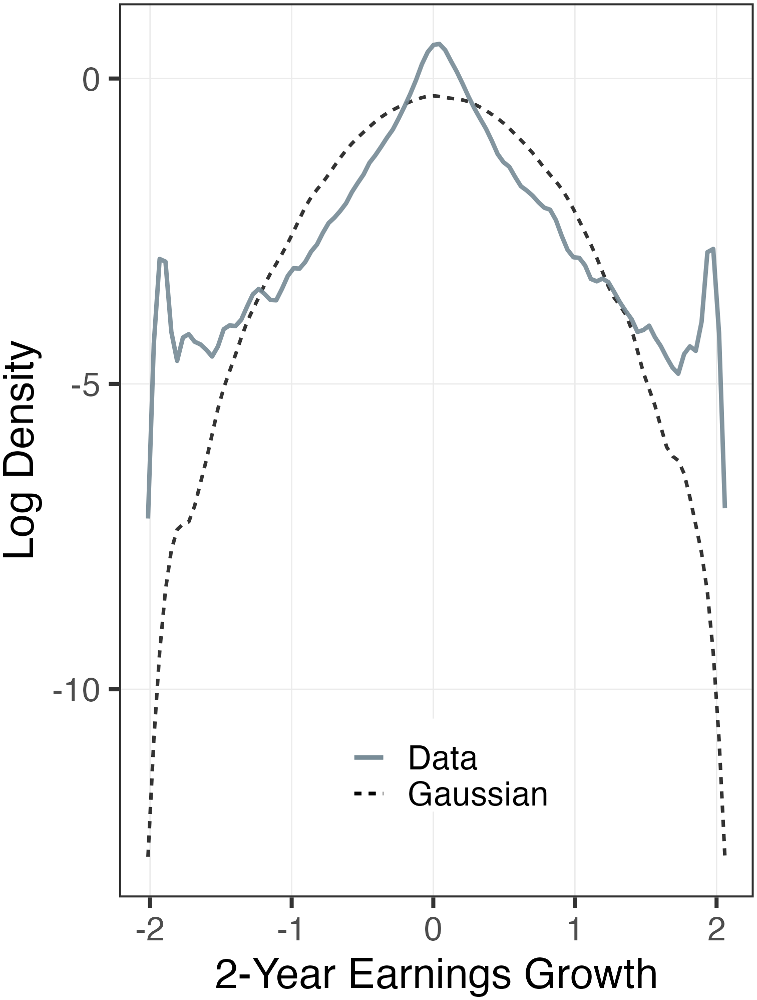
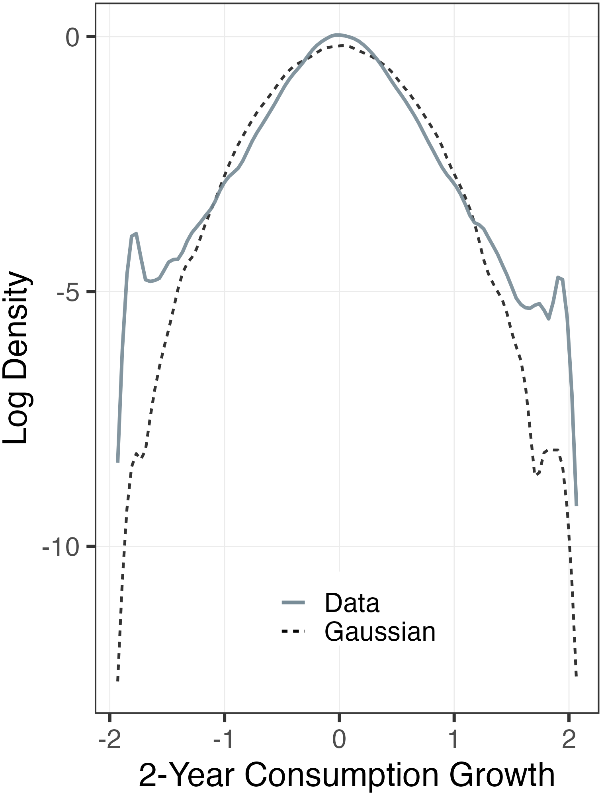
Notes: Figure B.1 shows the log density income and consumption changes in our sample. Income refers to households income after taxes and transfers. The sample includes households whose heads are males, between 25-65, and earnings at least $1500 in a given year from the PSID waves 2005-2021.All distributions are truncated at -2 and 2, so the extremes include all changes below -2 and above 2.
9 Additional Figures and Tables
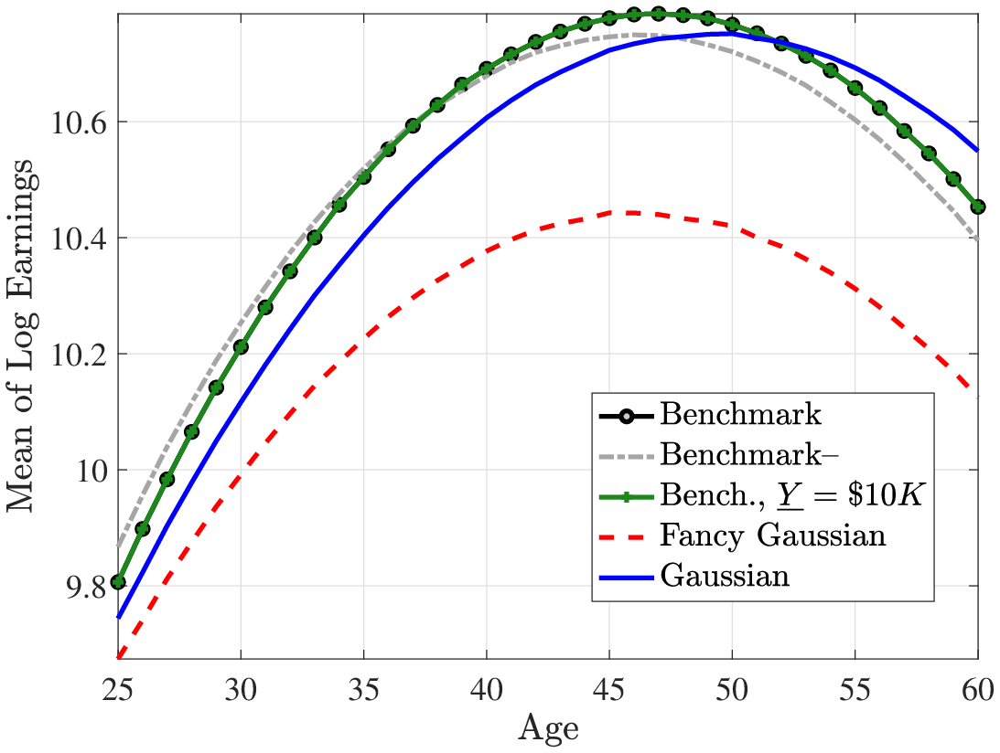
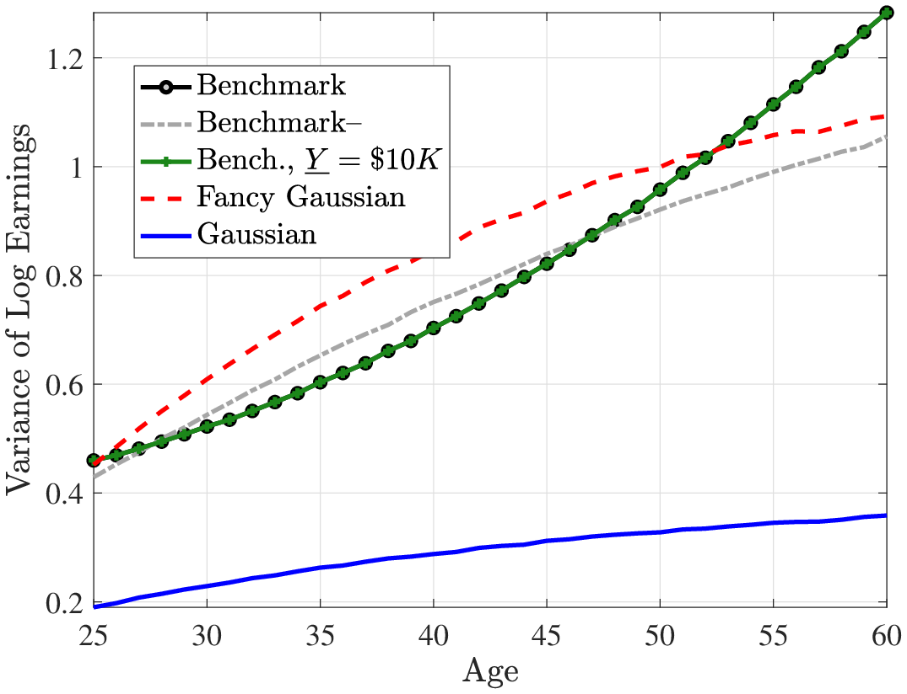
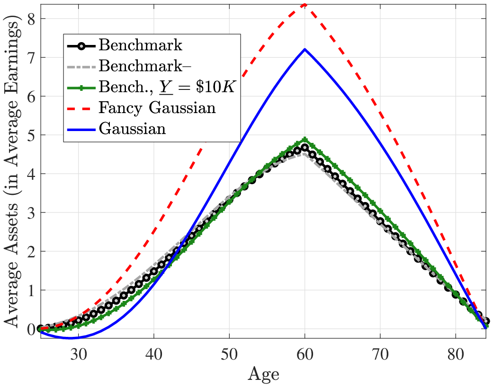
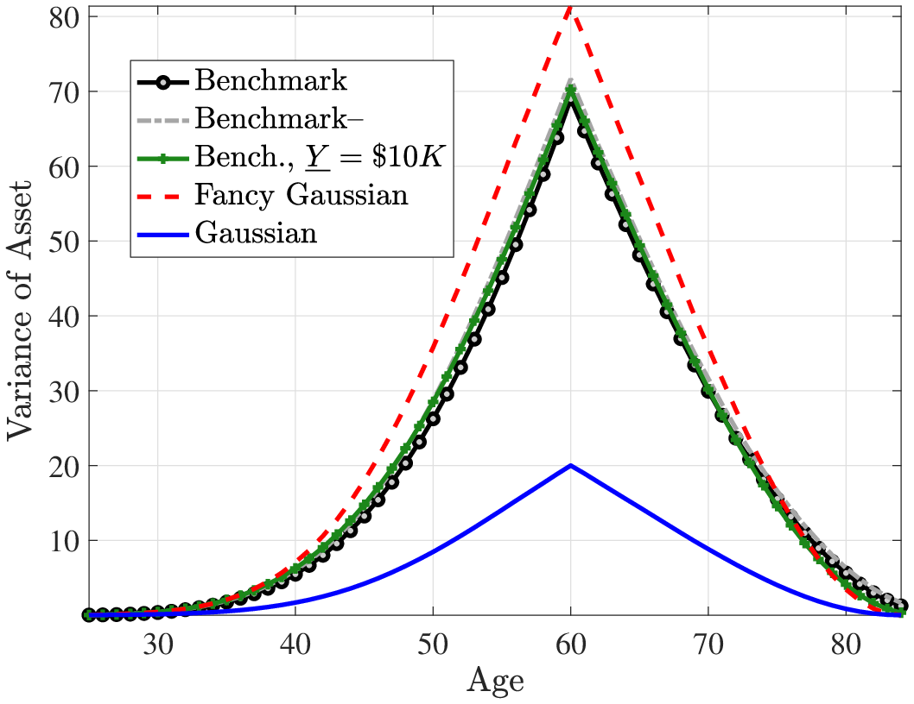
Notes:
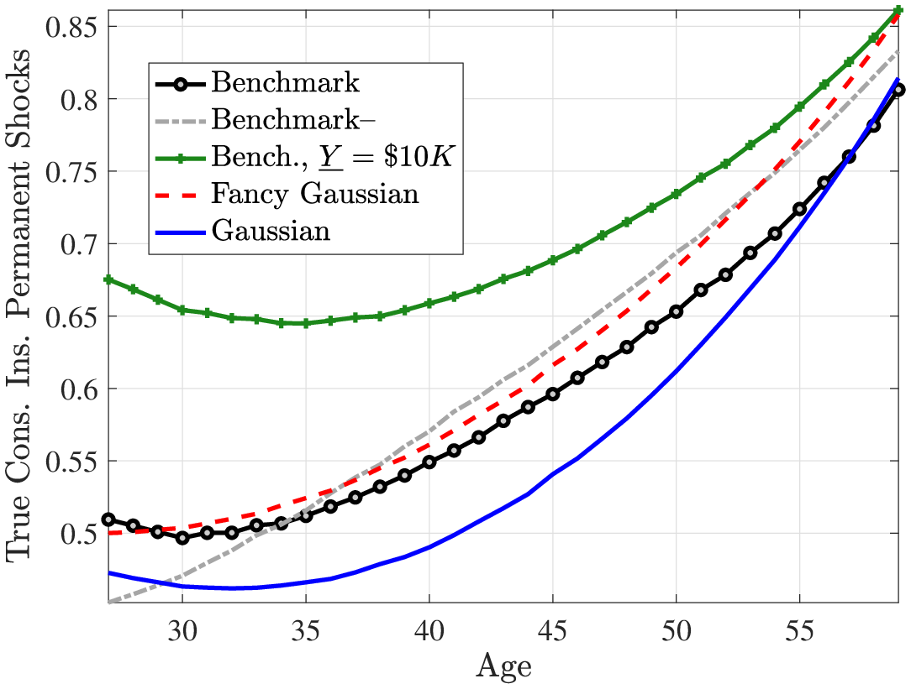
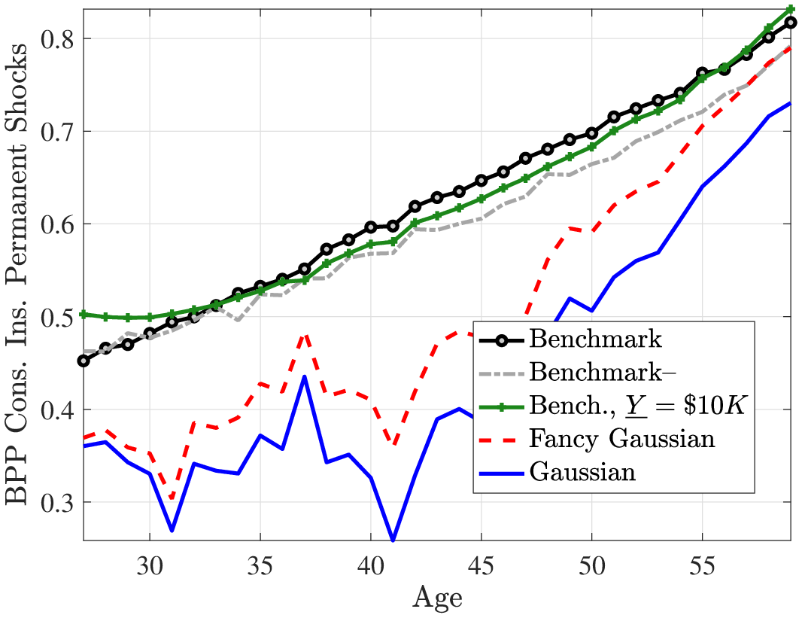
Notes: This figure shows the nonemployment risk between \(t\) and \(t+1\) conditional on recent earnings between \(t-1\) and \(t-5.\) Benchmark model (left panel) is the non-Gaussian, nonlinear income process. Gaussian (right panel) is a random walk income process with Gaussian shocks, which is estimated so as to generate similar inequality to the benchmark process.
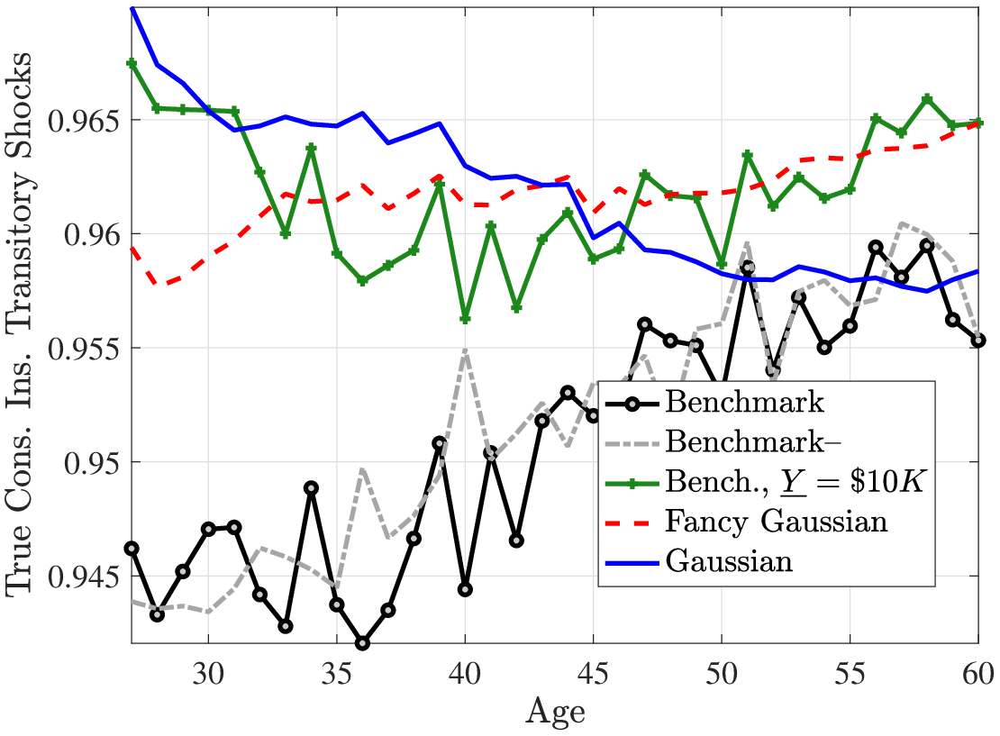
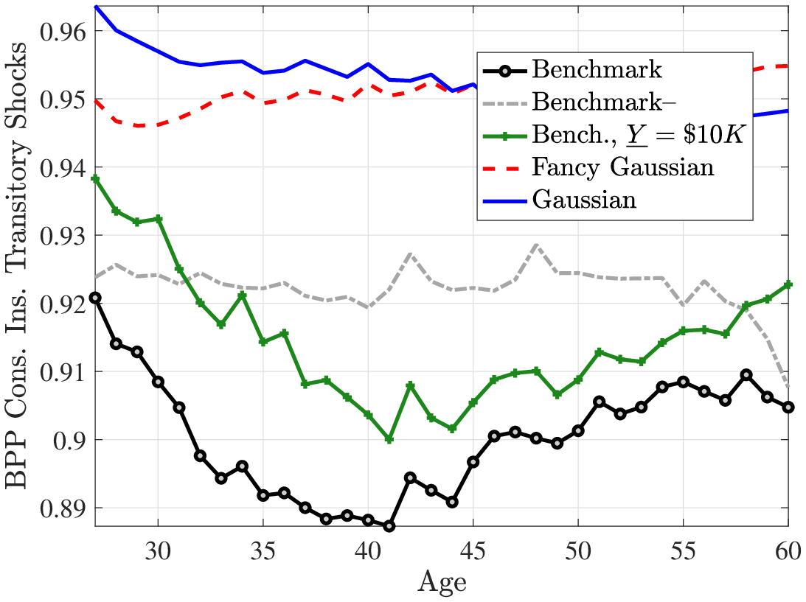
Notes: This figure shows the nonemployment risk between \(t\) and \(t+1\) conditional on recent earnings between \(t-1\) and \(t-5.\) Benchmark model (left panel) is the non-Gaussian, nonlinear income process. Gaussian (right panel) is a random walk income process with Gaussian shocks, which is estimated so as to generate similar inequality to the benchmark process.
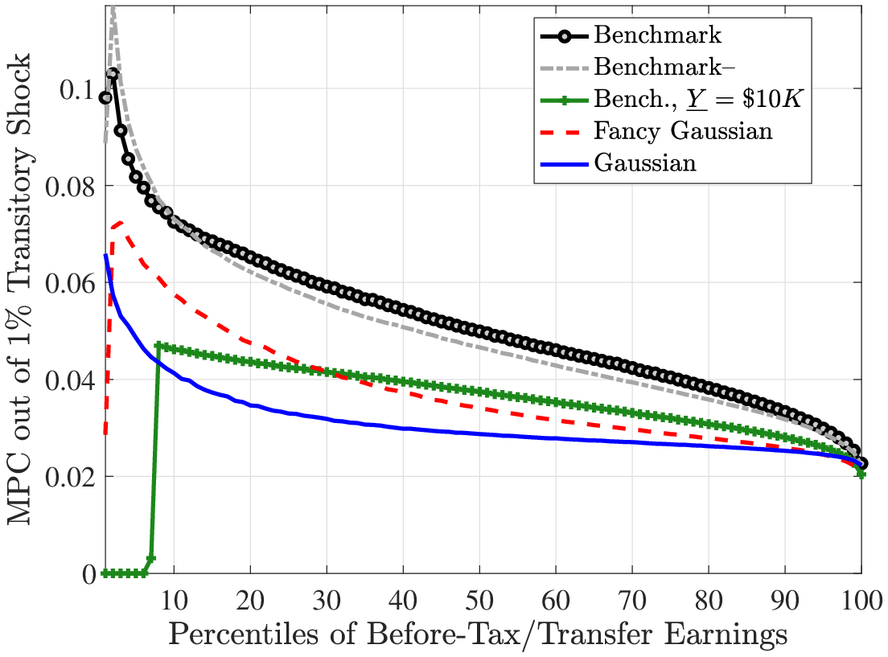
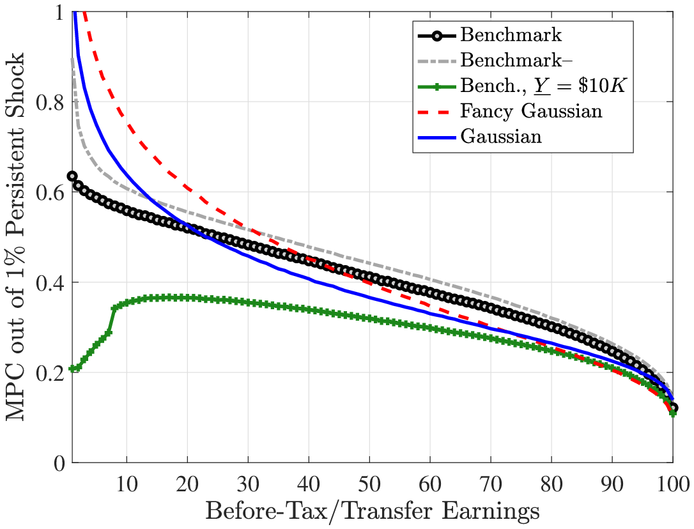
Notes: The figures plot the MPCs in response to a transitory increase in earnings (\(\varepsilon\)) (left panel) and persistent increase (right panel) that is equal to 1% of each individual’s earnings level. The difference from Figure (6) is that here the MPCs are plotted as a function of before-tax/transfer earnings percentiles.
| Welfare Cost with Cohort Average Assets | |||||
| <=P25 | P45–P55 | P70–P80 | P90–P95 | P95-P100 | |
| Age | Canonical Gaussian | ||||
| 25 | 7.06% | 7.03% | 7.03% | 7.05% | 7.26% |
| 35 | 5.89% | 5.43% | 5.49% | 5.55% | 6.17% |
| 45 | 3.17% | 2.90% | 3.19% | 3.21% | 3.99% |
| 55 | 0.81% | 0.72% | 0.90% | 1.01% | 1.45% |
| Age | Benchmark Process | ||||
| 25 | 27.37% | 27.43% | 29.40% | 28.36% | 28.41% |
| 35 | 25.33% | 16.71% | 20.75% | 20.65% | 22.11% |
| 45 | 11.22% | 6.45% | 10.39% | 11.81% | 14.91% |
| 55 | 2.53% | 1.00% | 2.19% | 2.92% | 6.32% |
Note: This table is analogous to Table 8 except that we give each individual the average wealth of the entire cohort at that age rather than the average wealth of the age/income cell she belongs to.
| Storesletten et al. 2004 | Kaplan and Violante 2010 | Karahan and Ozkan 2013 | GKOS | GKOS | |
| (1) | (3) | Gaussian | Gaussian+ | Gaussian++ | |
| \(\sigma _{\alpha}\) | 0.448 | 0.387 | 0.120 | 0.420 | 1.182 |
| \(\rho\) | 0.957 | 1.0 | 0.980 | 0.981 | 1.005 |
| \(\sigma _{\eta}\) | 0.188 | 0.10 | 0.110 | 0.190 | 0.134 |
| \(\sigma _{z_{0}}\) | 0.0 | 0.0 | 0.28 | 0.01 | 0.343 |
| \(\sigma _{\varepsilon}\) | 0.35 | 0.25 | 0.30 | 0.49 | 0.696 |
| \(\beta\) | 0.987 | 0.993 | 0.985 | 0.975 | 0.969 |
| \(\tau\) | 0.185 | 0.185 | 0.185 | 0.185 | 0.185 |
| \(\lambda\) | 1.75 | 1.68 | 1.65 | 1.79 | 2.22 |
| \(\phi _{1}\) | 0.001 | 0.001 | 0.648 | 0.031 | 0.264 |
| \(\phi _{2}\) | 9.77 | 7.17 | 9.11 | 8.516 | 9.71 |
| 11.3% | 8.25% | 8.48% | 16.79% | 52.00% | |
| 20.00% | 15.17% | 9.20% | 24.03% | 18.77% |
| Canonical Gaussian | Benchmark | ||
| (1) | (4) | ||
| Specification | |||
| (1) | $20%$ Borr. | 8.82% | 34.90% |
| (2) | \(50\%\text{Fancy}\) | 8.29% | 34.62% |
| (3) | No Beq | 8.40% | 32.67% |
| (4) | \(\sigma =5\) | 19.70% | 44.86% |
Note: The next to last row (“Fluctuations”) reports the risk from idiosyncratic fluctuations for an individual with the average type: \(\alpha ^{i}=0\) (and \(\theta ^{i}=0\) for the benchmark process). The last row reports the total risk as viewed from behind the veil of ignorance—i.e., it includes the additional risk from the uncertainty of drawing \(\alpha ^{i}\) (and \(\theta ^{i}\) for benchmark).
| Individual Earnings | Household Earnings | Household Earnings | |||||||
| All households | All households | Married households | |||||||
| Age | 30 | 40 | 50 | 30 | 40 | 50 | 30 | 40 | 50 |
| Standard deviation | 0.63 | 0.53 | 0.51 | 0.58 | 0.50 | 0.46 | 0.50 | 0.46 | 0.42 |
| Skewness coeff | 0.05 | –0.42 | –0.17 | 0.14 | –0.49 | –0.36 | 0.13 | –0.26 | –0.47 |
| Kurtosis coeff. | 8.72 | 13.22 | 13.68 | 8.61 | 14.68 | 15.59 | 9.48 | 17.40 | 18.07 |
| P90-P10 | 1.22 | 0.88 | 0.83 | 1.17 | 0.87 | 0.78 | 1.03 | 0.78 | 0.72 |
| Kelley skewness | 0.07 | 0.03 | -0.06 | 0.08 | –0.02 | –0.09 | 0.10 | 0.04 | -0.09 |
| Crow-Siddiqui kurtosis | 6.53 | 7.91 | 8.32 | 5.64 | 6.80 | 7.15 | 5.06 | 6.33 | 6.37 |
Notes: Table C.4 shows the moments of 2-year earnings changes. Earnings refers to individual or households labor income after taxes and transfers. The sample for the first column includes all households including singles with male or female heads; the sample for the second column is the same but the earnings measure is household earnings in the case of married couples. The sample for the last column includes married households only. The statistics are computed from the PSID waves 2005–2021. Age groups are defined including plus and minus three years.
Footnotes
See, e.g., Arellano, Blundell and Bonhomme (2017a) and Guvenen, Karahan, Ozkan and Song (2021) for the US data, and the November 2022 special issue of Quantitative Economics on Global Income Dynamics for evidence on 12 additional countries. Guvenen, Pistaferri and Violante (2022b) summarizes the evidence documented in these articles and show that the significant deviations from lognormality documented for the United States are also observed in these 12 countries.↩︎
We use the terms “earnings” and (labor) “income” interchangeably throughout the paper.↩︎
For example, the Crow-Siddiqui kurtosis measure in their study is much lower than the GKOS reports from the SSA data. As we discuss below, skewness is also much less pronounced in the PSID due to possible measurement error.↩︎
A relative risk aversion above 1 is enough to yield higher welfare costs under higher-order risk.↩︎
The values reported here are computed exactly from equation ((1)) using numerical integration, so it does not rely on the approximation in ((2)).↩︎
The main change is that the expectation on the right hand side of the Bellman equation becomes the weighted sum of two integrals (e.g., with weights \(p_{z}\) and \(1-p_{z}\)), each using the density of the respective Gaussian distribution that makes up the mixture. These integrals are most conveniently computed using continuous integration methods (e.g. based on Gaussian quadrature, etc.) rather than discretizing the shock spaces, which is difficult because the optimal location of grid points needs to be different for each Gaussian component.↩︎
It takes a –350 log point shock to \(z_{t}\) or \(\varepsilon _{t}\) for a worker earning $50,000 to drop below \(Y_{\text{min}}\). Generating such large shocks with sufficiently high frequency to match worker exit rates makes it challenging to simultaneously match the high frequency of smaller shocks.↩︎
Because our model features a nonzero borrowing limit and stochastic survival, households may die with outstanding debt. For simplicity, we assume that both borrowing and saving interest rates are equal to the risk-free rate. However, in a robustness check, we modify the borrowing rate to incorporate the probability of death in addition to the risk-free rate and find very similar results.↩︎
This value is based on the Flow of Funds Z1 tables. The total wealth-to-income ratio is defined to be total asset holdings in the population relative to the sum of total before-tax labor income and capital income.↩︎
In an earlier paper, Hubbard et al. (1995) estimate the total value of various government programs (food stamps, AFDC, housing subsidies, etc.) for a female-headed family with two children and no outside earnings and assets. They obtain a value of about $7,000 in 1984 dollars. Using the OECD equivalence scale for one adult plus two children, this comes to $6,400 per adult person in 2010 dollars.↩︎
Although these parameter values are fairly representative of values typically used in the literature, Table C.2 shows results under different sets of parameter values estimated in other papers.↩︎
The former version corresponds what is also called a “restricted income profiles” or RIP process whereas the latter corresponds to a “heterogenous income profiles” or HIP process (e.g., Guvenen (2009)).↩︎
The parameter values are taken from columns (5) and (6) of GKOS’s Table IV.↩︎
We do not adjust household income or consumption by household size. Given the focus on log-changes and that household structure is quite stable for our age sample the equivalisation does not make a substantial difference.↩︎
This point is also apparent in Figure 8 in De Nardi, Fella, Knoef, Paz-Pardo and Van Ooijen (2021), which shows the second to fourth moments of individual male labor income, household labor income, and household after-tax-and-transfer income for different ages and income percentiles. Like in our sample of the PSID, the standard deviation and Kelley Skewness of labor earnings changes are remarkably similar across individuals and households. Some differences arise in Crow-Siddiqui kurtosis in the lowest deciles of the income distribution, but mostly for households whose head is above 55.↩︎
Notice that the skewness measures from the PSID are less pronounced compared to those from the administrative data, possibly due to added noise in the PSID to the extent that measurement error is symmetric. In addition, changes in the PSID are biennial, which can smooth out earnings changes.↩︎
As shown by GKOS, the benchmark process fits a wide range of empirical moments of individual earnings dynamics for US workers, including the levels of the higher-order moments (skewness and kurtosis) of earnings growth, their variation with age and with recent earnings levels; the impulse responses of earnings (i.e., their mean reversion patterns) and their variation by recent earnings levels as well as with the size and sign of the earnings shocks; and finally, the heterogeneity in the lifecycle earnings growth rates by lifetime earnings levels, among others. In interest of space, we do not reproduce those results here and just focus on two features of the data not discussed in detail in GKOS.↩︎
“Full-year non-employed” is defined in GKOS as an individual whose annual earnings is below a threshold that corresponds to the pay for one quarter of half-time work (260 hours total) at the legal minimum wage in that year, \(\bar{Y_{t}}\). For example, in 2010, this amount corresponded to $1,885.↩︎
It is worth noting that the Benchmark-R process matches the data even better than the benchmark process for the bottom 70 percent of the population.↩︎
Recall that we also consider a canonical process that can match the distribution of employment rates in Table C.2 under column Gaussian++. It should not be surprising that for this process the welfare cost behind the veil of ignorance is extremely high at 52% (because of its extremely large variance of fixed effects). Despite its large transitory and nonstationary persistent shocks, the welfare effects for an individual with the average type, \(\alpha ^{i}\equiv 0\) is less than 19%, which is only roughly half the welfare costs we find for the benchmark process.↩︎
See Guvenen (2009) for an explanation of why restricting growth rate heterogeneity biases the estimate of \(\rho\) upward. Also, notice that even though \(\rho =0.959\) and \(\rho =0.991\) may appear close, they are quite different: for example, at 20 year horizon, the impact of a shock falls to about 43% under the former but still keeps about 83% of its initial impact under the latter.↩︎
Notice, however, that the welfare costs behind the veil of ignorance in the bottom row show a larger increase for benchmark process to 61.2 (from 41.6% in column 4 of Table VI).↩︎
The third and fourth standardized moment measures of skewness and kurtosis—which we do not report here for brevity—confirm the same finding. Further, Figure C.1 in Appendix B confirms that the difference in kurtosis in the empirical distribution of consumption growth compared to the Gaussian reference (3.63 compared to 2.95 at age 40, for example) is indeed significant.↩︎
Separately, Brav et al. (2002) argued that accounting for the skewness of consumption growth distribution helps improve the performance of asset pricing models for explaining the equity premium observed in the data.↩︎
See Kaplan and Violante (2022) for a recent review of the extensive recent literature that studies heterogeneity in MPCs.↩︎
Since \(z_{1,t}\) and \(z_{2,t}\) are in log values polynomially spaced grid points along these dimensions performed worse. We have 11 and 61 grid points for \(z_{1,t}\) and \(z_{2,t}\) spaces, respectively.↩︎
The budget constraint and the other equations that properly define the value function are omitted here for simplicity.↩︎
The PSID has been running since 1968, but the expansion to consumption beyond food and housing only happened in the 1999 wave, with information on 1998 spending for a few consumption categories. In 2005, the PSID finalized the expansion with a comprehensive list of consumption categories.↩︎